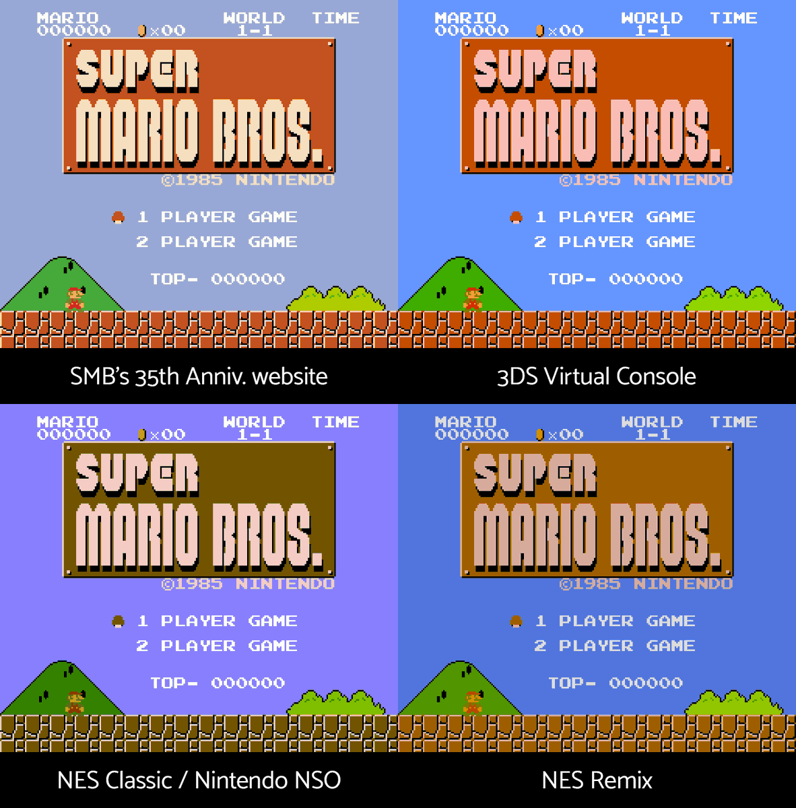
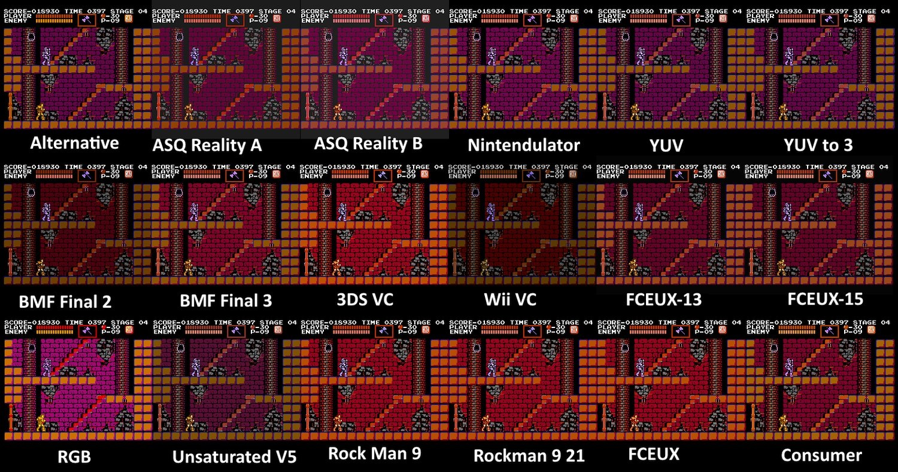
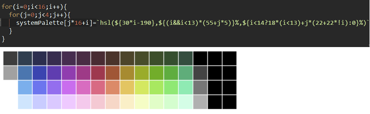
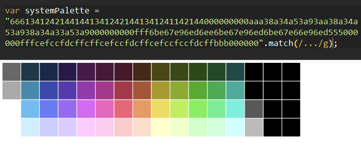
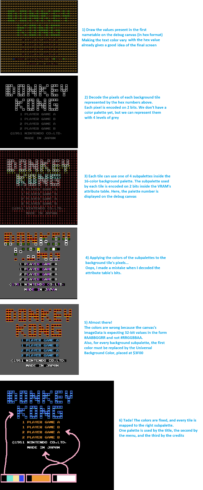
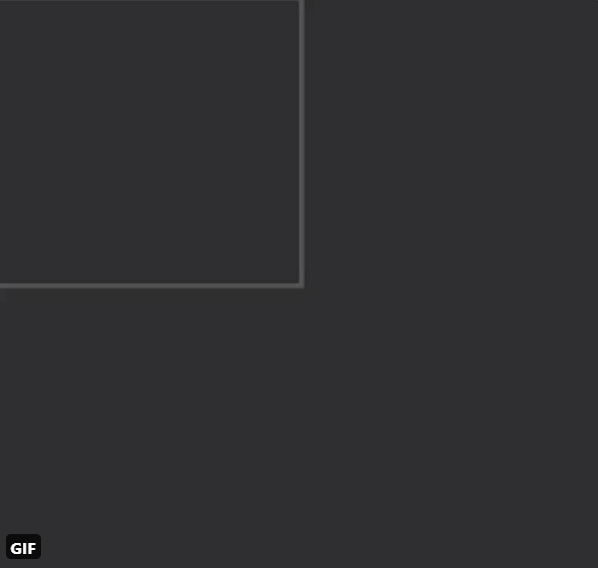
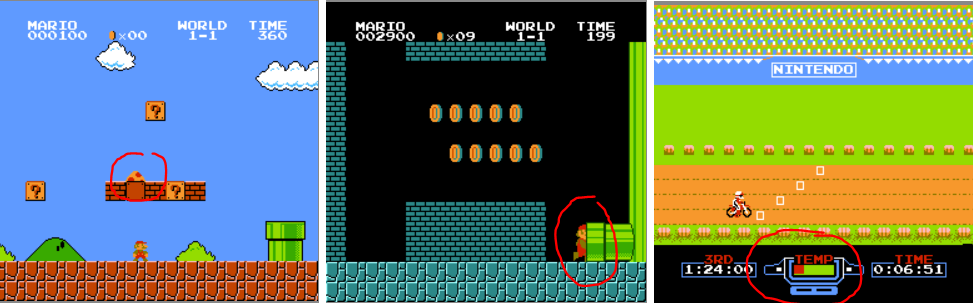

<!doctype html>
<meta charset=utf-8>
<meta name="viewport" content="width=device-width, user-scalable=no">
<html>
<head>
<link rel=stylesheet href="../style.css?v=4">
<title>Maxime Euzière</title>
</head>
<body>

<div class="wrapper">

<style>details { cursor: pointer; background: #d8d8d8; padding: 5px; border-radius: 5px; }</style>

<header></header>

<div id=menu></div>

<main>

<div class=section id=nes>
<h2>Golfing a NES emulator in JS</h2>
<h3>October 2020 - WIP</h3>
<br>

<br><br><hr><br>
<h3>Introduction</h3>
<p>Hello!<br>
Today I'm going to tell you how I'm creating the world's smallest NES emulator in JS, <a href="https://github.com/xem/jsnes-lite">jsnes-lite</a>.
<br>(the kind of projects I do when I have way too much free time)
<br>It's a highly detailed version of <a href="https://twitter.com/MaximeEuziere/status/1316455403274858501">this Twitter thread</a>.
<p>In the previous years, I've made many attempts at creating my onw NES emulator from scratch:
<br>I wrote an <a href="https://github.com/xem/nes/blob/gh-pages/cheat%20sheet.txt">emulation cheat-sheet</a> and built a <a href="https://xem.github.io/nes/">ROM decompiler and debugger</a>...
<br>
<br>

<br>
<br>but unfortunately, all the preparation and all the docs I could read (<a href="http://wiki.nesdev.com/w/index.php/NES_reference_guide">NESdev</a>, <a href="http://problemkaputt.de/everynes.htm">NO$NES</a>) weren't enough to boot a single game.
<br>The actual CPU and graphics emulation were just too tricky for me.
<p>So I decided to try a different approach: fork an existing (and functional) NES emulator in JS, and golf it down to just a few kilobytes.
<p>After some research, I chose the most popular one, <a href="//github.com/bfirsh/jsnes">jsnes</a>, which is already quite large:
<br>- 5411 lines of code
<br>- 191KB commented
<br>- 99.92KB minified
<br>- 21.29KB gzipped

<p>... and can't acually run without its huge UI (<a href="https://github.com/bfirsh/jsnes-web">jsnes-web</a>) made with Bootstrap and React 😱:
<br>- 1106 dependencies
<br>- 304Mb of node_modules
<br>- 1614 lines of code
<br>- 51.4KB commented
<br>- 349KB built and minified
<br>- 99.5KB gzipped

<p>My goal will be to figure out what all these lines of code do exactly, and try to replicate that with the smallest possible amount of code.
<br>Keep in mind that an emulator is fractally complex. You can add accuracy and features as much as you want, it'll never really end...
<br>so I will aim for a MVP (minimum viable product) supporting a good amount of commercial games, and under 10KB zipped.
<br>Let's go on a journey full of traps, surprises, reverse-engineering and arbitrary choices!

<p><i>This article contains chunks of commented code and extra explanations hidden behind dropdowns. Feel free to read or skip them.</i>

<br><br><hr><br>

<h3>The UI</h3>
<br>

<br>

<p>Let's start with the elephant in the room: the UI. What does <b>jsnes-web</b> do to weigh almost 100KB? Not so many things actually:
<br>- Initialize a 2D canvas and an AudioContext, with their framebuffers and audio buffers
<br>- Start the jsnes emulator
<br>- Load a ROM file and hand it to jsnes's ROM manager
<br>- Render the frames and play the sound samples returned by the emulator, 60 times per second
<br>- Listen to keyboard inputs and hand them to jsnes's control manager

<p>So I created a standalone HTML page that did all that in Vanilla JavaScript, while respecting jsnes's API:

<p><details>
<summary><b>HTML setup</b> (3 lines)</summary>
<pre><code class="lang-html">&lt;canvas id=canvas width=256 height=240 style="background:#000">&lt;/canvas>
<br>&lt;b>Controls&lt;/b>: arrow keys + X + C + Start + Esc
<br>&lt;input type=file id=file></code></pre>
</details>

<p><details>
<summary><b>Canvas setup</b> (106 lines => 5)</summary>
<pre><code class="lang-js">var ctx = canvas.getContext("2d");
var imageData = ctx.getImageData(0,0,256,240);
var frameBuffer = new ArrayBuffer(imageData.data.length);
var frameBuffer8 = new Uint8ClampedArray(frameBuffer);
var frameBuffer32 = new Uint32Array(frameBuffer);</code></pre>
</details>

<p><details>
<summary><b>Audio setup</b> (236 lines => 15)</summary>
<pre><code class="lang-js">var audio = new AudioContext();
var audioprocessor = audio.createScriptProcessor(512, 0, 2);
audioprocessor.connect(audio.destination);

// When the Audio processor requests new samples to play
audioprocessor.onaudioprocess = audioEvent => {

  // Ensure that we've buffered enough samples
  if(leftSamples.length > currentSample + 512){
    for(var i = 0; i &lt; 512; i++){
    
      // Output (play) the buffers in stereo
      audioEvent.outputBuffer.getChannelData(0)[i] = leftSamples[currentSample];
      audioEvent.outputBuffer.getChannelData(1)[i] = rightSamples[currentSample];
      currentSample++;
    }
  }
}
var leftSamples = [];
var rightSamples = [];
var currentSample = 0;</code></pre>
</details>

<p><details>
<summary><b>Load rom, start emulator, display new frame / play new sound samples at 60fps</b> (417 lines => 26)</summary>
<pre><code class="lang-js">file.onchange = () => {
  var fileReader = new FileReader();
  fileReader.readAsBinaryString(file.files[0]);
  fileReader.onload = () => {
    var nes = new jsnes.NES({
          
      // Display each new frame on the canvas
      onFrame: function(frameBuffer){
        var i = 0;
        for(var y = 0; y &lt; 256; ++y){
          for(var x = 0; x &lt; 240; ++x){
            i = y * 256 + x;
            frameBuffer32[i] = 0xff000000 | frameBuffer[i];
          }
        }
        imageData.data.set(frameBuffer8);
        ctx.putImageData(imageData, 0, 0);
      },
      
      // Add new audio samples to the Audio buffers
      onAudioSample: function(left, right){
        leftSamples.push(left);
        rightSamples.push(right);
      },
      
      // Pass the browser's sample rate to the emulator
      sampleRate: 44100,
    });
    
    // Send ROM to emulator
    nes.loadROM(fileReader.result);
    
    // 60 fps loop
    setInterval(nes.frame, 16);
  }
}</code></pre>
</details>

<p><details>
<summary><b>Controller</b> (453 lines => 17)</summary>
<pre><code class="lang-js">onkeydown = onkeyup = e => {
  nes[e.type == "keyup" ? "buttonUp" : "buttonDown"](
    1,
    jsnes.Controller["BUTTON_" + 
      {
        37: "LEFT",
        38: "UP",
        39: "RIGHT",
        40: "DOWN",
        88: "A", // X
        67: "B", // C
        27: "SELECT",
        13: "START"
      }[e.keyCode]
    ]
  )
}</code></pre>
</details>

<p>The original jsnes-web also features a game list and supports USB gamepads, but I don't.
<br>It also uses a 4KB <a href="https://www.npmjs.com/package/ringbufferjs">RingBuffer</a> library to store and play audio samples, which is simply unnecessary.
<p>Anyway, when all my code is put together, it's as small as 1078b minified and 721b gzipped.

<pre style="font-size:12px;line-height:1"><code class="lang-html">&lt;canvas id=c width=256 height=240 style=background:#000>&lt;/canvas>
&lt;p>&lt;input type=file id=f>
&lt;p>&lt;b>Controls&lt;/b>: arrow keys + A + B + Start + Esc
&lt;script src=jsnes.min.js>&lt;/script>
&lt;script>e=c.getContext`2d`,o=e.getImageData(0,0,256,240),n=new ArrayBuffer(o.data.length),t=new Uint8ClampedArray(n),r=new Uint32Array(n),l=new AudioContext,s=l.createScriptProcessor(512,0,2),s.connect(l.destination),s.onaudioprocess=e=>{if(a.length>C+512)for(var n=0;n&lt;512;n++)e.outputBuffer.getChannelData(0)[n]=a[C],e.outputBuffer.getChannelData(1)[n]=T[C],C++},a=[],T=[],C=0,f.onchange=()=>{n=new FileReader,n.readAsBinaryString(f.files[0]),n.onload=()=>{f.remove(),N=new jsnes.NES({onFrame:n=>{for(l=0,s=0;s&lt;256;++s)for(A=0;A&lt;240;++A)r[l=256*s+A]=0xff000000|n[l];o.data.set(t),e.putImageData(o,0,0)},onAudioSample:(e,n)=>{a.push(e),T.push(n)},sampleRate:44100}),N.loadROM(n.result),setInterval(N.frame,16),onkeydown=onkeyup=e=>{N[e.type[5]?"buttonDown":"buttonUp"](1,jsnes.Controller[`BUTTON_`+{37:`LEFT`,38:`UP`,39:`RIGHT`,40:`DOWN`,88:`A`,67:`B`,`SELECT`,13:`START`}[e.keyCode]])}}}&lt;/script></code></pre>

<br>In other words, 140 times smaller than the original, and still fully compatible with jsnes.
<br>(A lot of that size is actually used to respect jsnes's API, so it'll be even smaller in my final version of jsnes-lite.)

<p>Here's my fork of jsnes-web: <a href="https://github.com/xem/jsnes-web">Github repo</a> / <a href="https://xem.github.io/jsnes-web/index.min.html">Demo</a>.
<br>The author of jsnes found it <a href="https://github.com/bfirsh/jsnes-web/pull/300">neat</a>!

<br><br><hr><br>

<h2>The emulator!</h2>

<br><hr><br>

<h3>The big picture</h3>

<p>I've drawn an overview of all the elements that must be handled by a NES emulator:
<br>
<br>

<br>
<p>Of course, a ton of details are not covered here, that's what we'll see in the following parts.

<br><br><hr><br>
<h3>How I will proceed</h3>

<p>jsnes's 191KB source code is divided in <a href="https://github.com/bfirsh/jsnes/tree/master/src">10 files</a>:
<p>- <b>controller.js</b> (27 lines, 548b) emulates the joypads by updating an array of 8 values when buttonDown(key) and buttonUp(key) are called.
<br>- <b>cpu.js</b> (2024 lines, 52.7KB) has a reset() and an emulate() function, able to execute any of the CPU's 256 instructions & interrupts.
<br>- <b>mappers.js</b> (1518 lines, 37.5KB) handles reads / writes in CPU memory and communicates with the gamepak, controllers, PPU & APU.
<br>It supports the gamepak formats (Mappers) 0-5, 7, 11, 34, 38, 66, 94, 140 and 180, for a total coverage of ~90% of all commercial games.
<br>- <b>nes.js</b> (210 lines, 4.8KB) is the emulator's entry point. It exposes a constructor NES(), a reset() function and a frame() function.
<br>Its job is to call CPU.emulate() repeatedly until the current frame is completed (every 29780.5 cycles on NTSC, or 33247.5 on PAL),
<br>and tells the APU to generate the audio samples that need to be played when this frame is displayed.
<br>- <b>papu.js</b> (1371 lines, 36.6KB) handles all the audio. It exposes three functions: reset(), setSampleRate() and clockFrameCounter().
<br>- <b>ppu.js</b> (1753 lines, 48.8KB) handles all the graphics. It exposes four functions: reset(), startFrame(), startVBlank() and endScanline().
<br>- <b>rom.js</b> (204 lines, 5.5KB) has a load() function that parses a ROM file and places its content in memory.
<br>- <b>tile.js</b> (5KB) and <b>utils.js</b> (0.6KB) handle graphics generation and memory copies, so they can be merged with ppu.js and mappers.js. 
<br>- <b>index.js</b> is not necessary, it just loads nes.js.

<p><b>A little problem...</b>
<p>These files are quite hard to read. Not only do they lack comments and good variable naming, but they also contain a frightening amount of redundancy, absurd abstractions, unneeded complexity, backwards logic, dead code, and <a href="images/nes/9.png">errors</a> too...

<p>But I can't really complain, because despite all these problems, it's a <i>Vanilla JS</i> emulator that <i>works</i>, which is just what I need to get started!

<p><b>First steps</b>
<p>So after forking it and taking a few days to clean up a bunch of useless code and trying to make sense of the rest by reading some documentation online, I could finally start taking all these files one by one and rewriting them the way I want: clean, readable, commented, functional, accurate, fast, and as short as possible after minification. That's what I'll explain in the next chapters.

<p>For simplicity, I'll get rid of all the JS modules, Objects and prototypes present in jsnes. All the variables and functions will be "global".
<br>Though, I know that some people tend to find that quite dirty, so I'll also provide a version where everything will be contained in a self-executing function, with no global leaks.

<p><b>The scope</b>
<p>For the initial release, I'll try to limit the amount of features supported by my emulator:
<br>- 1 or 2 joypad controllers mapped to keyboard keys (no Duck Hunt zapper, no USB gamepad...).
<br>- No support for Famicom Disc System, Arcade systems, and other variants or peripherals.
<br>- The CPU will only emulate the 151 legal/official instructions, which is enough to run <a href="https://wiki.nesdev.com/w/index.php/CPU_unofficial_opcodes#Games_using_unofficial_opcodes">99.9% of all commercial games</a>.
<br>- The PPU will not simulate NTSC video rendering nor special video effects like greyscale or color emphasis (which are almost never used).
<br>- Support for the gamepak mappers 0-4 only, which represent about <a href="http://tuxnes.sourceforge.net/nesmapper.txt">75% of all games</a> (though 100% of the games you know are covered).
<br>- No debug tools, except an optional VRAM visualizer (showing the background tiles and screen viewport).
<br>- No TAS tools (save states, frame advance, keystrokes recording/playback).
<br>- Save slots will be stored in localStorage for games that support it.

<p><b>The goal</b>
<p>At the end, I'll gather everything in a standalone HTML page, golf it a bit further, and hopefully obtain the world's smallest NES emulator.

<p>But who are my concurrents anyway? Here's my top 5:
<p>- <a href="https://github.com/takahirox/nes-js">nes-js</a> (JS emulator, standalone version: 3744 lines of code, 81KB minified, 16KB zipped)
<br>- <a href="https://github.com/bfirsh/jsnes">jsnes</a> (the most popular JS emulator, 5411 lines of code, 99.9KB minified, 21KB zipped)
<br>- <a href="https://github.com/wwssllabcd/NesEmu">nesemu1</a> (C emulator 743 lines of code, 45KB commented, 97KB compiled with SDL)
<br>- <a href="https://github.com/AndreaOrru/LaiNES">LaiNes</a> (C++ emulator in 1730 lines of code, 63KB commented, 198KB compiled with SDL2)
<br>- <a href="https://problemkaputt.de/nes.htm">no$nes</a> (windows executable only, 340KB)

<p><b>Golfing, minification and compression</b>
<p>I'll write my code as legible and commented as possible, while trying to write the least possible amount of code.
<br>Sometimes, the code I write could be shorter with some refactoring, but I'll avoid it if it doesn't improve gzip compression.
<br>Then, I'll minify my code with <a href="https://try.terser.org/">Terser REPL</a> with the following settings: <b>{module: false, mangle: {toplevel: true}}</b>.
<br>When I'll gather all my minified files into one, I'll golf them a bit further.
<br>Finally, I'll gzip my minified code with the command <b>zopfli --gzip -i10000 min.js</b>.

<br><br><hr><br>
<h3>Golfing the rom loader</h3>

<br>
<p>Let's start with <a href="https://github.com/bfirsh/jsnes/blob/master/src/rom.js">rom.js</a> and <a href="https://github.com/bfirsh/jsnes/blob/master/src/mappers.js">mappers.js</a>, that parse rom files and handle the data present in the GamePak.

<p><b>Rom parsing</b>
<p>There's one major rom format that dominates NES emulation, called iNes 1.0 (".nes" files), so my emulator will support it.
<br>Unfortunately, it's not very well designed, nor well used by the people who dump and share games.
<p>But to summarize, it starts with a 16-byte header that contains information about the cartridge:
<br>
<br>- Number of 16KB PRG-ROM banks (game's code).
<br>- Number of 8KB CHR-ROM banks (game's graphics, split in two 4KB "pages". If zero, assume that there's an editable CHR-RAM bank)
<br>- Presence of a 8KB PRG-RAM bank (save slot).
<br>- Nametable mirroring (background layout, allowing horizontal, vertical or bidirectional scrolling).
<br>- Mapper number (0-255). Represents the cartridge's format. Mappers > 255 require other rom formats like iNes 2.0.
<br>- Presence of a 512b "trainer" ROM bank specific to certain hardware or rom hacks.
<br>- Presence of extra ROM banks specific to arcade games.
<br>- The TV system (NTSC or PAL) is sadly not reliable in this file format, so it must be found elsewhere (<a href="http://bootgod.dyndns.org:7777/advanced.php">ROM database</a> or user input).

<p>...then the rom file contains dumps (copies) of:
<br>- the trainer (if any).
<br>- all the PRG-ROM banks.
<br>- all the CHR-ROM banks.
<br>- extra ROM banks specific to arcade games (if any).
<p>rom.js takes a rom file, reads the header and keeps a copy of each PRG-ROM bank and CHR-ROM page present in it.

<p><b>Mapper 0: "NROM"</b>
<p>
<p>For now, let's focus on the simplest mapper "Mapper 0", used by many famous games like DK, SMB, Ice Climbers, Excitebike, Pac-Man...
<br>The games using this mapper fit all their code in 32KB and all their graphics in 8KB, so no bank swaps are necessary.
<br>So when the rom's header is parsed, mappers.js has the simple task to copy the two PRG-ROM banks in CPU memory (at addresses $8000 and $C000) and the two CHR-ROM pages in PPU memory (at addresses $0000 and $1000).

<p><b>Golfing</b>
<details>
<summary><b>New rom.js, commented</b></summary>
<pre><code class="lang-js">// ROM loader
// ==========

// Load a ROM file:
parse_rom = data => {
  
  var i, j;
  
  // Ensure file starts with chars "NES\x1a"
  if(data.includes("NES")){
  
    // Read useful information from the rom header:
    
    // Check if the game adds 2 extra KB to the PPU's VRAM to have a 4-screen nametable (byte 6, bit 3)
    // Otherwise, read mirroring layout (byte 6, bit 0)
    // 0 => vertical mirroring (bit 0 on: the game can scroll horizontally)
    // 1 => horizontal mirroring (bit 0 off: the game can scroll vertically)
    // 2 => 4-screen nametable (bit 4 on: the game can scroll horizontally and vertically)
    mirroring = (data.charCodeAt(6) & 0b00001000) ? 2 : (data.charCodeAt(6) & 0b0000001) ? 0 : 1;
    
    // Check if the game has at least one battery-backed PRG-RAM bank (byte 6, bit 1)
    // This is a persistent save slot that can be used to save the player's progress in a game
    // If present, it can be accessed by the CPU at the addresses $6000-$7FFF (ignored for now)
    // batteryRam = (data.charCodeAt(6) & 0b0000010);
    
    // Mapper number (byte 6, bits 4-7 >> 4 + byte 7, bits 4-7)
    // iNes 2.0 ROMs contain more mapper bits on byte 8
    mapper = (data.charCodeAt(6) >> 4) + (data.charCodeAt(7) & 0b11110000);
    
    // Skip header
    offset = 16;
    
    // Skip 512b trainer, if it's present (byte 6, bit 2)
    // This ROM bank is only used by special hardware or rom hacks, so it can be ignored
    // (if present, it's usually mapped to the memory addresses $7000-$71FF)
    if(data.charCodeAt(6) & 0b00000100) offset += 512;
    
    // Load the PRG-ROM banks containing the game's code
    // The number of 16KB PRG-ROM banks is stored on byte 4 of the header
    prg_rom = [];
    for(i = 0; i &lt; data.charCodeAt(4); i++){
      prg_rom[i] = [];
      for(j = 0; j &lt; 16 * 1024; j++){
        prg_rom[i][j] = data.charCodeAt(offset++) & 0xff;
      }
    }
    
    // Load the CHR-ROM pages
    // The number of pairs of 4KB CHR-ROM pages is stored on byte 5 of the header
    // Each bank contains 256 8*8px, 4-color bitmap tiles
    chr_rom = [];
    for(i = 0; i &lt; data.charCodeAt(5) * 2; i++){
      chr_rom[i] = [];
      for(j = 0; j &lt; 4 * 1024; j++){
        chr_rom[i][j] = data.charCodeAt(offset++) & 0xff;
      }
    }
  }
}</code></pre></details>

<br>
<details>
<summary><b>New mappers.js, commented</b></summary>
<pre><code class="lang-js">// Mappers
// =======

// Mapper 0
// --------

// Only Mapper 0 (NROM) is handled for now:
// https://wiki.nesdev.com/w/index.php/NROM

// - 8, 16 or 32KB PRG-ROM (mirrored if less than 32KB)
// - 0 or 8KB PRG-RAM (only one game uses it: Family Basic)
// - 0, 4 or 8KB CHR-ROM (mirrored if it's just 4)
// - 0 or 8KB CHR-RAM (enable it if no CHR-ROM is present. Mapper 0 doesn't really support it, but some homebrew ROMs rely on it)
// - Horizontal or vertical nametable mirroring

// Load ROM's content in memory
load_rom = () => {
  
  // Load PRG-ROM banks in CPU memory:
  // If there are two banks or more, the first two banks are placed at addresses $8000 and $C000
  // If there's only one bank, it's mirrored at both locations (ex: Donkey Kong, Galaxian)
  copy_array(prg_rom[0], CPU_mem, 0x8000);
  copy_array(prg_rom[prg_rom.length > 1 ? 1 : 0], CPU_mem, 0xC000);

  // Load CHR-ROM pages in PPU memory:
  // If there are two pages or more, the first ones are placed at addresses $0000 and $1000
  // If there's only one page, it's mirrored at both locations
  // But if the game has no CHR-ROM banks, do nothing (CHR-RAM is used instead)
  if(chr_rom.length > 0){
    copy_array(chr_rom[0], PPU_mem, 0x0000);
    copy_array(chr_rom[chr_rom.length > 1 ? 1 : 0], PPU_mem, 0x1000);
  }
},

// Copy the values of an array into a specific position in another array
copy_array = (src, dest, address) => {
  for(var i = 0; i &lt; src.length; i++){
    dest[address + i] = src[i];
  }
}</code></pre></details>

<p><details open><summary><b>Minified</b></summary>
<pre style="font-size:12px;line-height:1"><code class="lang-js">// ROM loader, 349b
parse_rom=(e,c,d)=>{if(e.includes("NES")){for(8&e.charCodeAt(6)?2:1&e.charCodeAt(6)?0:1,(e.charCodeAt(6)>>4)+(240&e.charCodeAt(7)),a=16,4&e.charCodeAt(6)&&(a+=512),r=[],c=0;c&lt;e.charCodeAt(4);c++)for(r[c]=[],d=0;d&lt;16384;d++)r[c][d]=255&e.charCodeAt(a++);for(o=[],c=0;c&lt;2*e.charCodeAt(5);c++)for(o[c]=[],d=0;d&lt;4096;d++)o[c][d]=255&e.charCodeAt(a++)}}

// Mapper 0, 276b
load_rom=()=>{copy_array(prg_rom[0],CPU_mem,32768),copy_array(prg_rom[prg_rom.length>1?1:0],CPU_mem,49152),chr_rom.length>0&&(copy_array(chr_rom[0],PPU_mem,0),copy_array(chr_rom[chr_rom.length>1?1:0],PPU_mem,4096))},
copy_array=(r,o,_)=>{for(var m=0;m&lt;r.length;m++)o[_+m]=r[m]}</code></pre>
</details>

<p>You can see that function and external variables still have long names in the minified code, they will be reduced in the final release.
<br>Also, these files are not yet complete. I'll add support for mappers 1-4 and persistent save slots a bit later.
<p>NB: the original rom.js file precomputed the tile's pixels of all the CHR-ROM banks, but I removed this part.
<br>The PPU can do it fast enough at runtime, and in the case of editable CHR-RAM banks, it HAS to do it on runtime anyways, so it's fine.

<p><b>Before / after</b>
<p>In jsnes, the rom parsing and Mapper 0 handling represent:
<br>- 605 lines of code
<br>- 18.2KB commented
<br>- 9.8KB minified
<br>- 2.7KB gzipped

<p>After rewriting it (and fixing it), my version is down to:
<br>- 36 lines of code
<br>- 9.22KB commented
<br>- 641b minified
<br>- 330b gzipped

<br><br><hr><br>
<h3>Golfing the CPU's memory map</h3>

<p><b>Presentation</b>
<p>As you may know, the NES's CPU can access a 64KB memory whose layout is considered very elegant. It can be summarized like this:
<p>
<div style=overflow-x:auto>
<pre style=width:690px><code class='lang-js'>//  +-------------+---------+-------------------------------------------------------+
//  | Address     | Size    | Use                                                   |
//  +-------------+---------+-------------------------------------------------------+
//  | $0000-$07FF | 2KB     | 2KB internal RAM:                                     |
//  | $0000-$00FF | 256B    | - Zero page                                           |
//  | $0100-$01FF | 256B    | - Stack                                               |
//  | $01FF-$07FF | 1.5KB   | - general purpose                                     |
//  +-------------+---------+-------------------------------------------------------+
//  | $0800-$1FFF | 3*2KB   | Mirrors of $0000-$07FF                                |
//  +-------------+---------+-------------------------------------------------------+
//  | $2000-$2007 | 8B      | PPU I/O registers                                     |
//  +-------------+---------+-------------------------------------------------------+
//  | $2008-$3FFF | 1023*8B | Mirrors of $2000-$2007                                |
//  +-------------+---------+-------------------------------------------------------+
//  | $4000-$4017 | 24B     | APU/sprite/interrupt/joypads I/O registers            |
//  +-------------+---------+-------------------------------------------------------+
//  | $4018-$401F | 8B      | APU I/O test registers (disabled)                     |
//  +-------------+---------+-------------------------------------------------------+
//  | $4020-$FFFF | 48KB    | Cartridge space:                                      |
//  | $4020-$5FFF | 8160B   | - Expansion ROM (extra ROM banks)                     |
//  | $6000-$7FFF | 8KB     | - PRG-RAM (if any)                                    |
//  | $7000-$71FF | 512B    | - trainer (if any)                                    |
//  | $8000-$BFFF | 16KB    | - PRG-ROM low page                                    |
//  | $C000-$FFFF | 16KB    | - PRG-ROM high page                                   |
//  +-------------+---------+-------------------------------------------------------+</code></pre>
</div>

<p>The whole memory can be simulated with a JS Array (or Uint8Array), filled with 8-bit values (0-255).
<p>We just saw that <b>load_rom()</b> copied two 16kb PRG-ROM banks at addresses $8000 and $C000.
<p>The remaining parts to handle are:
<p>- Memory mirrors: the internal RAM is mirrored 3 times (read/write inside a mirror is strictly identical to a read/write in the internal RAM).
<br>- Wrap-around: accessing a memory address outside of $0000-$FFFF targets the same address (modulo 64KB) inside this range. 
<br>- I/O registers: reads/writes in the range $0800-$401F exchange data with the PPU, APU or Joypads, simulated with a function call.
<br>- Mapper control: depending on the GamePak's model, reads and writes at special addresses allow to perform bankswitches (present different PRG-ROM banks to the CPU and different CHR-ROM banks to the PPU on-the-fly)... this part will be done later.

<p><b>Golfing</b>

<p>These functions were initially present in mappers.js, I moved them to a new file: memory.js

<details>
<summary><b>Memory.js, commented (45 lines of code)</b></summary>
<pre><code class="lang-js">// Memory manager
// ==============

// Read a 8-byte value in memory
memory_read = address => {
  
  // Wrap around ($0000-$FFFF)
  address &= 0xFFFF;
  
  // Handle RAM mirrors ($0000-$07FF + $0800-$1FFF)
  if(address &lt; 0x2000) address &= 0x7FF;
  
  // PPU registers ($2000-$2007) + mirrors ($2008-$3FFF)
  else if(address &lt; 0x4000){
    
    // Mirroring
    address &= 0x2007;

    // $2002: PPU Status Register
    if(address == 0x2002) return get_PPUSTATUS(); 

    // $2004: Sprite Memory read
    else if(address == 0x2004) return get_OAMDATA(); 
    
    // $2007: VRAM read
    else if(address == 0x2007) return get_PPUDATA(); 
  }
  
  // Sound and I/O registers ($4000-$401F)
  else if(address &lt; 0x4020){
    
    // $4015: Sound channel enable, DMC Status
    if(address == 0x4015) return APU.readReg(address);

    // $4016: Joystick 1 + Strobe
    else if(address == 0x4016) return joy1Read();

    // $4017: Joystick 2 + Strobe
    else if(address == 0x4017) return joy2Read();
  }
  
  // Simply read in memory
  return cpu_mem[address] || 0;
},

// Write a 8-bit value in memory
memory_write = (address, value) => {
  
  // Wrap around ($0000-$FFFF)
  address &= 0xFFFF;
  
  // Handle RAM mirrors ($0000-$07FF + $0800-$1FFF)
  if(address &lt; 0x2000) address &= 0x7FF;
  
  // PPU registers ($2000-$2007) + mirrors ($2008-$3FFF)
  else if(address &lt; 0x4000){
    
    address &= 0x2007;
    
    // $2000: PPU Control register 1 (write-only)
    if(address == 0x2000) set_PPUCTRL(value);

    // $2001: PPU Control register 2 (write-only)
    else if(address == 0x2001) set_PPUMASK(value);

    // $2003: Set Sprite RAM address (write-only)
    else if(address == 0x2003) set_OAMADDR(value);

    // $2004: Write to Sprite RAM
    else if(address == 0x2004) set_OAMDATA(value);

    // $2005: Screen Scroll offsets (write-only)
    else if(address == 0x2005) set_PPUSCROLL(value);

    // $2006: Set VRAM address (write-only)
    else if(address == 0x2006) set_PPUADDR(value);

    // $2007: Write to VRAM
    else if(address == 0x2007) set_PPUDATA(value);
  }
  
  // Sound registers ($4000-$4013)
  else if(address &lt; 0x4014) APU.writeReg(address, value);
  
  // I/O registers ($4014-$401F)
  else if(address &lt; 0x4020){
    
    // $4014: Sprite Memory DMA Access
    if(address == 0x4014) set_OAMDMA(value);

    // $4015: Sound Channel Switch, DMC Status
    else if(address == 0x4015) APU.writeReg(address, value);

    // $4016: Joystick 1 + Strobe
    else if(address == 0x4016){
      if((value & 1) === 0 && (joypadLastWrite & 1) === 1){
        joy1StrobeState = 0;
        joy2StrobeState = 0;
      }
      joypadLastWrite = value;
    }

    // $4017: Sound channel frame sequencer:
    else if(address == 0x4017) APU.writeReg(address, value);
  }

  // Write to persistent RAM
  else if(address >= 0x6000 && address &lt; 0x8000) NES.onBatteryRamWrite(address, value);
  
  // Simply write in memory
  cpu_mem[address] = value;
}</code></pre>
</details>

<p>
<details open>
<summary><b>Minified (796b)</b></summary>
<pre><code class="lang-js">memory_read=e=>{if((e&=65535)&lt;8192)e&=2047;else if(e&lt;16384){if(8194==(e&=8199))return get_PPUSTATUS();if(8196==e)return get_OAMDATA();if(8199==e)return get_PPUDATA()}else if(e&lt;16416){if(16405==e)return APU.readReg(e);if(16406==e)return joy1Read();if(16407==e)return joy2Read()}return cpu_mem[e]||0},memory_write=(e,t)=>{(e&=65535)&lt;8192?e&=2047:e&lt;16384?8192==(e&=8199)?set_PPUCTRL(t):8193==e?set_PPUMASK(t):8195==e?set_OAMADDR(t):8196==e?set_OAMDATA(t):8197==e?set_PPUSCROLL(t):8198==e?set_PPUADDR(t):8199==e&&set_PPUDATA(t):e&lt;16404?APU.writeReg(e,t):e&lt;16416?16404==e?set_OAMDMA(t):16405==e?APU.writeReg(e,t):16406==e?(0==(1&t)&&1==(1&joypadLastWrite)&&(joy1StrobeState=0,joy2StrobeState=0),joypadLastWrite=t):16407==e&&APU.writeReg(e,t):e>=24576&&e&lt;32768&&NES.onBatteryRamWrite(e,t),cpu_mem[e]=t}</code></pre>
</details>

<p>Here again, a lot of long identifiers are still present in the code and will be renamed soon.

<p><b>Before / after</b>

<p>Before:
<br>- 213 lines of code
<br>- 7.1KB commented
<br>- 2.6KB minified
<br>- 805b gzipped

<p>After:
<br>- 45 lines of code
<br>- 9KB commented
<br>- 796b minified
<br>- 392b gzipped

<br><br><hr><br>
<h3>Golfing the CPU</h3>


<br>

<p><b>Presentation</b>
<p>The NES is powered by a CPU called Ricoh 6502, based on the famous MOS 6502 chip.
<br>This CPU can execute 56 different instructions (or "opcodes"), each of them is available in one or many "addressing modes" (there are 13 addressing modes representing different ways to fetch data in the CPU's 64KB memory), for a total of 256 instructions ($00 to $FF in hex).

<br>
<br>


<p>It can also execute 3 special routines called "interrupts" on special occasions (console reset, end of frame, or an external signal).
<p>It has:
<br>- 3 general purpose registers (A, X, Y),
<br>- a stack pointer (S),
<br>- a 2-byte program counter (PC),
<br>- Status flags (Carry, Zero, Interrupt disable, Decimal, oVerflow, Negative) placed in a dedicated register (P)
<p>and has access to a 64KB memory containing:
<br>- the internal RAM (2KB, including the stack),
<br>- a bunch of I/O registers (to communicate with the Mapper, the PPU, the APU and the Joypads),
<br>- the ROM banks exposed by the cartridge: trainer (if present), PRG-RAM (save slot, if present), and two 16KB PRG-ROM banks containing the game's code.
 
<p>Nintendo modified the original 6502 chip a little to remove some features they didn't need and merge it with the console's audio chip.
<br>Besides that, all that it does, a real 6502 can do it too. And luckily, a lot of documentation and implementations exist online, like:
<p>- <a href="https://www.masswerk.at/6502/6502_instruction_set.html">masswerk doc</a>, detailing the cycles and flags used by each instruction,
<br>- <a href="https://wiki.nesdev.com/w/index.php/CPU">Nesdev</a>, explaining all the rest,
<br>- <a href="https://github.com/6502/js6502/blob/master/6502.js">6502.js</a>, a standalone JS simulator (13KB minified, 3.6KB zipped),
<br>- <a href="https://github.com/bfirsh/jsnes/blob/master/src/cpu.js">jsnes's cpu.js</a>, of course (27KB minified, 4.7KB zipped),
<br>- <a href="https://bisqwit.iki.fi/jutut/kuvat/programming_examples/nesemu1/nesemu1.cc">nesemu1</a>, a NES emulator in C specifically aiming for a small size. It encodes all the instructions in just 56 lines and 1054b zipped (the whole CPU takes about 2.5KB zipped).

<p><b>Analysis and improvement of nesemu1's encoding</b>

<p>I reverse-engineered nesemu1's CPU, improved its compression, and tried to use it in my own emulator, but it ended up being way too heavy. You can read more details below if you want (it was quite an adventure by itself):

<p><details>
<summary><b>Read more</b></summary>
<p>Here's nesemu1's CPU instructions encoding:
<p><pre style="font-size:12px;line-height:1"><code class="lang-js">t("                                !", addr = 0xFFFA) // NMI vector location
t("                                *", addr = 0xFFFC) // Reset vector location
t("!                               ,", addr = 0xFFFE) // Interrupt vector location
t("zy}z{y}zzy}zzy}zzy}zzy}zzy}zzy}z ", addr = RB(PC++))
t("2 yy2 yy2 yy2 yy2 XX2 XX2 yy2 yy ", d = X) // register index
t("  62  62  62  62  om  om  62  62 ", d = Y)
t("2 y 2 y 2 y 2 y 2 y 2 y 2 y 2 y  ", addr=u8(addr+d); d=0; tick())              // add zeropage-index
t(" y z!y z y z y z y z y z y z y z ", addr=u8(addr);   addr+=256*RB(PC++))       // absolute address
t("3 6 2 6 2 6 286 2 6 2 6 2 6 2 6 /", addr=RB(c=addr); addr+=256*RB(wrap(c,c+1)))// indirect w/ page wrap
t("  *Z  *Z  *Z  *Z      6z  *Z  *Z ", Misfire(addr, addr+d)) // abs. load: extra misread when cross-page
t("  4k  4k  4k  4k  6z      4k  4k ", RB(wrap(addr, addr+d)))// abs. store: always issue a misread
t("aa__ff__ab__,4  ____ -  ____     ", t &= A) // Many operations take A or X as operand. Some try in
t("                knnn     4  99   ", t &= X) // error to take both; the outcome is an AND operation.
t("                9989    99       ", t &= Y) // sty,dey,iny,tya,cpy
t("                       4         ", t &= S) // tsx, las
t("!!!!  !!  !!  !!  !   !!  !!  !!/", t &= P.raw|pbits; c = t)// php, flag test/set/clear, interrupts
t("_^__dc___^__            ed__98   ", c = t; t = 0xFF)        // save as second operand
t("vuwvzywvvuwvvuwv    zy|zzywvzywv ", t &= RB(addr+d)) // memory operand
t(",2  ,2  ,2  ,2  -2  -2  -2  -2   ", t &= RB(PC++))   // immediate operand
t("    88                           ", P.V = t & 0x40; P.N = t & 0x80) // bit
t("    nink    nnnk                 ", sb = P.C)       // rol,rla, ror,rra,arr
t("nnnknnnk     0                   ", P.C = t & 0x80) // rol,rla, asl,slo,[arr,anc]
t("        nnnknink                 ", P.C = t & 0x01) // lsr,sre, ror,rra,asr
t("ninknink                         ", t = (t &lt;&lt; 1) | (sb * 0x01))
t("        nnnknnnk                 ", t = (t >> 1) | (sb * 0x80))
t("                 !      kink     ", t = u8(t - 1))  // dec,dex,dey,dcp
t("                         !  khnk ", t = u8(t + 1))  // inc,inx,iny,isb
t("kgnkkgnkkgnkkgnkzy|J    kgnkkgnk ", WB(addr+d, t))
t("                   q             ", WB(wrap(addr, addr+d), t &= ((addr+d) >> 8))) // [shx,shy,shs,sha?]
t("rpstljstqjstrjst - - - -kjstkjst/", tick()) // nop,flag ops,inc,dec,shifts,stack,transregister,interrupts
t("     !  !    !                   ", tick(); t = Pop())                        // pla,plp,rti
t("        !   !                    ", RB(PC++); PC = Pop(); PC |= (Pop() &lt;&lt; 8)) // rti,rts
t("            !                    ", RB(PC++))  // rts
t("!   !                           /", d=PC+(op?-1:1); Push(d>>8); Push(d))      // jsr, interrupts
t("!   !    8   8                  /", PC = addr) // jmp, jsr, interrupts
t("!!       !                      /", Push(t))   // pha, php, interrupts
t("! !!  !!  !!  !!  !   !!  !!  !!/", t = 1)
t("  !   !                   !!  !! ", t &lt;&lt;= 1)
t("! !   !   !!  !!       !   !   !/", t &lt;&lt;= 2)
t("  !   !   !   !        !         ", t &lt;&lt;= 4)
t("   !       !           !   !____ ", t = u8(~t)) // sbc, isb,      clear flag
t("`^__   !       !               !/", t = c | t)  // ora, slo,      set flag
t("  !!dc`_  !!  !   !   !!  !!  !  ", t = c & t)  // and, bit, rla, clear/test flag
t("        _^__                     ", t = c ^ t)  // eor, sre
t("      !       !       !       !  ", if(t)  { tick(); Misfire(PC, addr = s8(addr) + PC); PC=addr; })
t("  !       !       !       !      ", if(!t) { tick(); Misfire(PC, addr = s8(addr) + PC); PC=addr; })
t("            _^__            ____ ", c = t; t += A + P.C; P.V = (c^t) & (A^t) & 0x80; P.C = t & 0x100)
t("                        ed__98   ", t = c - t; P.C = ~t & 0x100) // cmp,cpx,cpy, dcp, sbx
t("aa__aa__aa__ab__ 4 !____    ____ ", A = t)
t("                    nnnn 4   !   ", X = t) // ldx, dex, tax, inx, tsx,lax,las,sbx
t("                 !  9988 !       ", Y = t) // ldy, dey, tay, iny
t("                   4   0         ", S = t) // txs, las, shs
t("!  ! ! !!  !   !       !   !   !/", P.raw = t & ~0x30) // plp, rti, flag set/clear
t("wwwvwwwvwwwvwxwv 5 !}}||{}wv{{wv ", P.N = t & 0x80)
t("wwwv||wvwwwvwxwv 5 !}}||{}wv{{wv ", P.Z = u8(t) == 0)
t("             0                   ", P.V = (((t >> 5)+1)&2))         // [arr]</code></pre>

<p>This packing technique is pretty smart, because it lists all the micro-instructions that can be performed by the CPU in the right order: fetching some data, transforming it, storing it somewhere, jump to another address, etc.
<br>Each of these micro-instructions can be performed by one or many of the 259 official instructions/interrupts supported by the CPU.
<br>So nesemu1 encodes on each line:
<br>- a 33-char string that, when converted into binary, represents which instructions use it (from 0 to 259).
<br>- the C code simulating this micro-instruction.
<!--<br>And the function t() unpacks that into an optimized matrix of functions executeable for each opcode.-->

<p><b>Example:</b> the 18th micro-instruction performs an AND binary operation between a register and a byte read in memory:

<p><pre><code class="lang-js">t("vuwvzywvvuwvvuwv    zy|zzywvzywv ", t &= RB(addr+d))
// |_______________________________|   |_____________|
//     instructions using this          corresponding
//       micro-instruction                  C code</code></pre>

<p>So every time an instruction must be run, the emulator checks the encoded string in each of the 56 micro-instructions to see if it's relevant, and if it is, the code on the right is evaluated.

<p>I decoded the data from this file, to make this table (click to enlarge):
<br>
<br>
<a href="images/nes/6.jpg"></a>
<br>

<p>In nesemu1, this 56 x 33-chars ASCII encoding takes 1848 bytes.
<br>I found a way to improve it, by transposing the table:
<br>

<br>
<a href="images/nes/7.jpg"></a>
<br>

<p>When it's presented like that, the table shows which of the 56-micro instructions are used by each of the 259 real instructions,
<br>and it's interesting because it yields much more redundancy in the binary data than it did when it was the other way around.
<br>This redundancy can be exploited by replacing each repeated byte with a smaller binary number.
<br>(there are 64 different 1-byte patterns in total, so each of them can be encoded on 6 bits, reducing their size by 20%).
<br>In the end, after doing these optimizations and a bit of cleanup, my re-encoding fits in 259 x 5 = 1295 bytes...

<p>But I also have the actual JS source code to implement, and it takes some space:
<p>- <a href="https://twitter.com/MaximeEuziere/status/1320792142235770880">3.3KB</a> if I implement each micro-instruction.
<br>- <a href="https://twitter.com/MaximeEuziere/status/1320792139069071365">8.5KB</a> if I implement the 259 instructions directly in JS (as 13 addressing modes + 52 reuseable instructions).
<br>In both cases, I decided that it was way too much.

</details>

<p><b>I had to find something better!</b>

<p>I have to admit, golfing this CPU was a thrilling experience because it made me look for a way to express in a ridiculously small size the most important part of the NES (and other 8-bit consoles): its microprocessor.

<p>After a week of head-scratching, I finally found a way to implement the instructions that takes very little space *and* compresses very well.
<br>Actually, I decided to make an entirely standalone version of it, and challenged myself to fit it in 1KB!

<p>First, I initialized all the globals (memory, registers, flags) used by the CPU, and wrote a few useful helpers: 

<details>
<summary><b>CPU globals and helpers</b></summary>
<pre><code class="lang-js">// Globals
// -------

// 16KB memory
// Each chunk of 256 bytes in memory is called a page
// The first chunk ($00-$FF) is called Zero page and is easier/faster to access
m = [

  // Registers
  A =           // accumulator
  X =           // X
  Y =           // Y
  S =           // stack pointer (also called SP)
  PC =          // program counter (address of next instruction)
  P =           // status register (flags on bytes 0-7: C=0, Z=0, I=1, D=0, B=0, 1, V=0, N=0)

  // Other globals

  t,            // temp var
  o,            // opcode value
  a,            // operand address
  p,            // operand value
  c = 0         // cycle counter
],


// Helpers
// -------

// Read a byte from memory. (costs 1 cycle)
// The address is wrapped between $0000 and $FFFF
r = v => m[c++, v % 0x10000],

// Write a byte in memory. (costs 1 cycle)
w = (v, w) => m[c++, v % 0x10000] = w,

// Update N and Z status flags:
// - The value v is clamped on 8 bits and returned
// - The Zero flag (bit 1 of P) is set if v is zero, otherwise it's cleared
// - The Negative flag (bit 7 of P) is set if byte 7 of v is 1, otherwise it's cleared
F = v => (
  Z = (v &= 255) &lt; 1,
  N = v >> 7,
  v
),

// Update the flags values according to the status register P
f = v => (
  C = v & 1,
  Z = (v>>1) & 1,
  I = (v>>2) & 1,
  D = (v>>3) & 1,
  B = (v>>4) & 1,
  V = (v>>6) & 1,
  N = v>>7
),

// Set all flags on load
f(P = 0x24),

// Push on Stack
// Write at address $100 + S, decrement S, wrap it between $00 and $FF
h = v => (
  w(256 + S--, v),
  S &= 255
),

// Pull from stack
// Increment S, wrap it between $00 and $FF, read at address $100 + S
g = v => r(256 + (S = (255 & (S+1))))</code></pre>
</details>

<p>Then, I removed one quarter of the opcodes that are <a href="https://wiki.nesdev.com/w/index.php/CPU_unofficial_opcodes">not officially supported</a> nor used by 99.9% of commercial NES games.

<p>And for the 192 remaining ones, the idea was to generate a function that does something like that:
<pre><code class="lang-js">Opcodes[n] = function(){
  var targetAddress = myAddressingMode(); // execute the right addressing mode for opcode n
  myopcode(targetAddress);                // execute the right operation for opcode n
}</code></pre>

<p>We use functions instead of "eval" here because they're much faster to execute.
<br>With these, we can match the CPU's frequency of 5.3 million cycles (about 2-3 million instructions) per <u>second</u>.

<p>So I took the 10 main addressing modes, numbered them from 0 to 9, and made a 192b string representing which is used by each opcode.
<br>The letter "Z" is a dummy character that indicates that the operand is either implicit or the Accumulator register (addressing modes 11/12).
<br>A 13th addressing mode exists, but it's only used by a single opcode, so it will be implemented separately.

<pre><code class="lang-c">020666Z0Z77713Z444Z8Z999
720666Z0Z77713Z444Z8Z999
Z20666Z0Z77713Z444Z8Z999
Z20666Z0Z77713Z444Z8Z999
020666Z0Z77713Z445Z8Z998
020666Z0Z77713Z445Z8Z998
020666Z0Z77713Z444Z8Z999
020666Z0Z77713Z444Z8Z999</code></pre>
(Only 151 of these are legal opcodes, the others were chosen to create as much redundancy as possible, to improve compression.)

<p>Then I took many days to understand, implement, document and golf these addressing modes in the most compressible way I could find:

<details>
<summary><b>addressing modes implementation</b></summary>
<pre><code class="lang-js">myAddressingMode = () => {
  (
    // Addressing modes
    // ----------------

    // Some opcodes require an address in memory
    // This address can be computed in 11 different ways
    // The 10 main ones are implemented here, the 11th is included in the last instruction (JMP ind)
    // The order and implementations below are optimized for a better gzip compression
    
    // When this function is called:
    // - PC represents the current opcode's address
    // - o is the opcode's value
    // - a equals PC+1
    // - p is the value stored at the address PC+1
    // - c (the cycle counter) equals 2 because two memory reads have already been done (o and p)

    // "0": Immediate:
    // The target address is PC+1, already stored in a
    // Opcode size: 2 bytes
    // Cycles total: 2
    // Cycles addr.: -1 (1 cycle is removed because the first p fetch is redundant, the instruction has to read it again)
    // Cycles opc. : 1
    "c--,PC++;"

    // "1": Relative:
    // (only used for branching)
    // The target address (between PC-128 and PC+127) = PC + signed offset stored in p
    // Opcode size: 2 bytes
    // Cycles total: 2 (no branch) / 3 (branch on same page) / 4 (branch on another page)
    // Cycles addr.: 0
    // Cycles opc. : 0-2
    + "a=a+p-256*(p>>7),PC++;"

    // "2": Indexed indirect X
    // The target address is absolute and stored at a zero page address which is stored at PC + 1 + X
    // Opcode size: 2 bytes
    // Cycles total: 6 (read or write)
    // Cycles addr.: 3
    // Cycles opc. : 1
    + "a=r(p+X&255)+256*r(p+X+1&255),PC++,c++;"

    // "3": Indirect indexed Y
    // The target address is absolute and stored at a zero page address which is stored at PC+1, then Y is added to it
    // Opcode size: 2 bytes
    // Cycles total: 5* (read) / 6 (write)
    // Cycles addr.: 2-3
    // Cycles opc. : 0-1
    // * Cross-page read (if address and address + Y are on different pages) costs 1 extra cycle
    + "a=r(p)+256*r(p+1&255)+Y,c+=a-Y>>8&lt;a>>8||o>>4==9,PC++;"

    // "4": Zero page X
    // The target address is equal to zero page address (stored at PC+1) + X, wrapping between $00 and $FF
    // Opcode size: 2 bytes
    // Cycles total: 3 (BIT) / 4 (read or write) / 6 (read + write)
    // Cycles addr.: 1
    // Cycles opc. : 0-2
    + "a=r(a)+X&255,PC++;"

    // "5": Zero page Y
    // The target address is equal to zero page address (stored at PC+1) + Y, wrapping between $00 and $FF
    // Opcode size: 2 bytes
    // Cycles total: 4 (read or write)
    // Cycles addr.: 1
    // Cycles opc. : 1
    + "a=r(a)+Y&255,PC++;"

    // "6": Zero page
    // The target address (between $00 and $FF) is stored in p
    // Opcode size: 2 bytes
    // Cycles total: 3 (read or write) / 5 (read + write)
    // Cycles addr.: 0
    // Cycles opc. : 1-3
    + "a=p,PC++;"

    // "7": Absolute
    // The target address is stored at PC+1 (low byte) and PC+2 (high byte)
    // Opcode size: 3 bytes
    // Cycles total: 3 (JMP) / 4 (read or write) / 6 (read + write or JSR)
    // Cycles addr.: 1
    // Cycles opc. : 0-3
    + "a=p+256*r(PC+=2);"

    // "8": Absolute Y
    // The target address is equal to absolute address (stored at PC+1 and PC+2) + Y
    // Opcode size: 3 bytes
    // Cycles total: 4* (read) / 5 (write)
    // Cycles addr.: 1-2
    // Cycles opc. : 0-2
    // * Cross-page read (if address and address + Y are on different pages) costs 1 extra cycle
    + "t=p+256*r(PC+=2),c+=t>>8&lt;t+Y>>8||o>>4==9,a=t+Y;"

    // "9": Absolute X
    // The target address is equal to absolute address (stored at PC+1 and PC+2) + X
    // Opcode size: 3 bytes
    // Cycles total: 4* (read) / 5 (write) / 7 (read + write)
    // Cycles addr.: 1-2
    // Cycles opc. : 0-4
    // * Cross-page read (if address and address + X are on different pages) costs 1 extra cycle
    + "t=p+256*r(PC+=2),c+=t>>8&lt;t+X>>8||o>>4==9||(15&o)>13,a=t+X"

    // "Z": implicit or Accumulator
    // The target is either a flag or a CPU register (no need to compute an address)
    // (When a "Z" is read, the generated JavaScript code will just contain "undefined;")
    // Opcode size: 1 byte (no need to increment PC)
    // Cycles total: 2-7
    // Cycles addr.: 0
    // Cycles opc. : 0-5
    + ""

  // Make an array from this string
  ).split(";")

  // Fetch the right addressing mode for the current opcode (ignore illegal opcode where o % 4 == 3):
  // (The string below is optomized for compression: the illegal opcodes are assigned characters that create extra repetitions)
  [
    (
       "020666Z0Z77713Z444Z8Z999"
      +"720666Z0Z77713Z444Z8Z999"
      +"Z20666Z0Z77713Z444Z8Z999"
      +"Z20666Z0Z77713Z444Z8Z999"
      +"020666Z0Z77713Z445Z8Z998"
      +"020666Z0Z77713Z445Z8Z998"
      +"020666Z0Z77713Z444Z8Z999"
      +"020666Z0Z77713Z444Z8Z999"
    )[o-(o>>2)]
  ]
}</code></pre>
</details>

<p>I did the same with the 52 official opcodes, turned into an alphabet of printable ASCII chars ranging from " " to "[" :
<pre><code class="lang-c">PI#PI#KIDPI#=I#PI#1IDPI#
E6%)6%M6$)6%;6%E6%F6%E6%
NB'NB'JB&ZB'@B'NB'4B'NB'
Y90Y90L9*[90>90Y90290Y90
VRSVRS-zXVRSORSVRSWR VRS
/5A/5AQ5U/5A:5A/5AH5T/5A
"7C"7C.7("7C?7C"7C37C"7C
!8+!8+,8z!8+&lt;8+!8+G8+!8+</code></pre>

<p>And took a few weeks to implement, golf and reorder them many times until I reached my goal:

<details>
<summary><b>Opcodes implementation</b></summary>
<pre><code class="lang-js">myOpcode = (a) => {
  // Instructions
  // ------------

  // There are 56 official instructions, performing operations in memory and/or in the registers
  // When this function is called:
  // - a represents the operand's address in memory (if any)
  // - c is the cycle counter (incremented by 1-5 during the prefetch and the addressing)
  // Some instructions use extra cycles:
  // *  : cross-page when fetching the address costs 1 extra cycle
  // ** : Same-page branch (PC+2>>8 == a>>8) costs 1 extra cycle. Cross-page branch costs 2 extra cycles
  // ***: Instructions that read, modify and write a value in memory (+ JSR/RTI/RTS/PLA/PLP) cost 1 to 2 extra cycles
  // The order and implementations below are also optimized for a better gzip compression
  // Also, some instructions were splitted in two if they target either the memory or the Accumulator register (ROR, ROL, LSR, ASL)

  + (
  
    // " ": TXS (transfer X to stack pointer)
    // Stack pointer = X
    // Addressing:   imp
    // Opcode:       9A
    // Cycles total: 2
    // Cycles addr.: 0
    // Cycles opc. : 0
    "S=X;"
    
    // "!": CPX (compare memory and X)
    // N, Z and C are set with the result of X minus a byte in memory
    // Flag C is set if there's no borrow
    // Addressings:  imm, zpg, abs
    // Opcodes:      E0,  E4,  EC
    // Cycles total: 2,   3,   4
    // Cycles addr.: -1,  0,   1
    // Cycles opc. : 1,   1,   1
    + "p=r(a),C=X-p>=0,F(X-p);"

    // '"': CPY (compare memory and Y)
    // N, Z and C are set with the result of Y minus a byte in memory
    // Flag C is set if there's no borrow
    // Addressings:  imm, zpg, abs
    // Opcodes:      C0,  C4,  CC
    // Cycles total: 2,   3,   4
    // Cycles addr.: -1,  0,   1
    // Cycles opc. : 1,   1,   1
    + "p=r(a),C=Y-p>=0,F(Y-p);"

    // "#": ASL (shift left)
    // A byte in memory is left shifted. Flags: N, Z, C
    // The shifted-out bit 7 is saved in C
    // Addressings:  zpg, zpgX, abs, absX
    // Opcodes:      06,  16,   0E,  1E
    // Cycles total: 5,   6,    6,   7
    // Cycles addr.: 0,   1,    1,   2
    // Cycles opc. : 3,   3,    3,   3 (***)
    + "p=r(a),C=p>>7,w(a,F(2*p)),c++;"

    // "$": ROL A (rotate left accumulator)
    // Rotate left A. Same as left shift but C flag is put into bit 0. Flags: N, Z, C
    // The shifted-out bit 7 is saved in C
    // Addressing:   A
    // Opcode:       2A
    // Cycles total: 2
    // Cycles addr.: 0
    // Cycles opc. : 0
    + "C=A>>7,A=F(2*A+(1&P));"

    // "%": ROL (rotate left)
    // Rotate left a byte in memory. Same as left shift but C flag is put into bit 0. Flags: N, Z, C
    // The shifted-out bit 7 is saved in C
    // Addressings:  zpg, zpgX, abs, absX
    // Opcodes:      26,  36,   2E,  3E
    // Cycles total: 5,   6,    6,   7
    // Cycles addr.: 0,   1,    1,   2
    // Cycles opc. : 3,   3,    3,   3 (***)
    + "p=r(a),C=p>>7,w(a,F(2*p+(1&P))),c++;"

    // "&": LSR A (shift right accumulator)
    // A is shifted right. Flags: N, Z, C
    // The shifted-out bit 0 is saved in C
    // Addressing:   A
    // Opcode:       4A
    // Cycles total: 2
    // Cycles addr.: 0
    // Cycles opc. : 0
    + "C=1&A,A=F(A>>1);"

    // "'": LSR (shift right)
    // A or a byte in memory is shifted right. Flags: N, Z, C
    // The shifted-out bit 0 is saved in C
    // Addressings:  zpg, zpgX, abs, absX
    // Opcodes:      46,  56,   4E,  5E
    // Cycles total: 5,   6,    6,   7
    // Cycles addr.: 0,   1,    1,   2
    // Cycles opc. : 3,   3,    3,   3 (***)
    + "p=r(a),C=1&p,w(a,F(p>>1)),c++;"

    // "(": DEX (decrement X)
    // X is decremented. Flags: N, Z
    // Addressing:   imp
    // Opcode:       CA
    // Cycles total: 2
    // Cycles addr.: 0
    // Cycles opc. : 0
    + "X=F(X-1);"

    // ")": BIT (test bits in memory)
    // N and V = bits 7 and 6 of operand. Z is set if operand AND A is not zero. Flags: N, Z, V
    // Addressings:  zpg, abs
    // Opcodes:      24,   2C
    // Cycles total: 3,    4
    // Cycles addr.: 0,    1
    // Cycles opc. : 1,    1
    + "p=r(a),F(p&A),N=p>>7&1,V=p>>6&amp;1;"

    // "*": ROR A (rotate right accumulator)
    // Rotate right A or a byte in memory. Same as left shift but C flag is put into bit 7. Flags: N, Z, C
    // The shifted-out bit 0 is saved in C
    // Addressing:   A
    // Opcode:       6A
    // Cycles total: 2
    // Cycles addr.: 0
    // Cycles opc. : 0
    + "C=1&A,A=F((A>>1)+128*(1&P));"

    // "+": INC (increment memory)
    // A byte in memory is incremented. Flags: N, Z
    // Addressings:  zpg, zpgX, abs, absX
    // Opcodes:      E6,  F6,   EE,  FE
    // Cycles total: 5,   6,    6,   7
    // Cycles addr.: 0,   1,    1,   2
    // Cycles opc. : 3,   3,    3,   3 (***)
    + "w(a,F(r(a)+1)),c++;"

    // ",": INX (increment X)
    // X is incremented. Flags: N, Z
    // Addressing:   imp
    // Opcode:       E8
    // Cycles total: 2
    // Cycles addr.: 0
    // Cycles opc. : 0
    + "X=F(X+1);"

    // "-": DEY (decrement Y)
    // Y is decremented. Flags: N, Z
    // Addressing:   imp
    // Opcode:       88
    // Cycles total: 2
    // Cycles addr.: 0
    // Cycles opc. : 0
    + "Y=F(Y-1);"

    // ".": INY (increment Y)
    // Y is incremented. Flags: N, Z
    // Addressing:   imp
    // Opcode:       C8
    // Cycles total: 2
    // Cycles addr.: 0
    // Cycles opc. : 0
    + "Y=F(Y+1);"

    // "/": LDY (load Y with memory)
    // Y = a byte from memory. Flags: N, Z
    // Addressings:  imm, zpg, zpgX, abs, absX
    // Opcodes:      A0,  A4,  B4,   AC,  BC
    // Cycles total: 2,   3,   4,    4,   4*
    // Cycles addr.: -1,  0,   1,    1,   1*
    // Cycles opc. : 1,   1,   1,    1,   1
    + "Y=F(r(a));"

    // 0: ROR (rotate right)
    // Rotate right a byte in memory. Same as left shift but C flag is put into bit 7. Flags: N, Z, C
    // The shifted-out bit 0 is saved in C
    // Addressings:  zpg, zpgX, abs, absX
    // Opcodes:      66,  76,   6E,  7E
    // Cycles total: 5,   6,    6,   7
    // Cycles addr.: 0,   1,    1,   2
    // Cycles opc. : 3,   3,    3,   3 (***)
    + "p=r(a),C=1&p,w(a,F((p>>1)+128*(1&P))),c++;"

    // "1": CLC (clear carry flag)
    // C is set to 0
    // Addressing:   imp
    // Opcode:       18
    // Cycles total: 2
    // Cycles addr.: 0
    // Cycles opc. : 0
    + "C=0;"

    // "2": SEI  (set interrupt disable flag)
    // I is set to 1
    // Addressing:   imp
    // Opcode:       78
    // Cycles total: 2
    // Cycles addr.: 0
    // Cycles opc. : 0
    + "I=1;"

    // "3": CLD (clear decimal flag)
    // D is set to 0
    // Addressing:   imp
    // Opcode:       D8
    // Cycles total: 2
    // Cycles addr.: 0
    // Cycles opc. : 0
    + "D=0;"

    // "4": CLI (clear interrupt disable flag)
    // I is set to 0
    // Addressing:   imp
    // Opcode:       58
    // Cycles total: 2
    // Cycles addr.: 0
    // Cycles opc. : 0
    + "I=0;"

    // "5": LDA (load accumulator with memory)
    // A = a byte from memory. Flags: N, Z
    // Addressings:  imm, zpg, zpgX, abs, absX, absY, indX, indY
    // Opcodes:      A9,  A5,  B5,   AD,  BD,   B9,   A1,   B1
    // Cycles total: 2,   3,   4,    4,   4*,   4*,   6,    5*
    // Cycles addr.: -1,  0,   1,    1,   1*,   1*    3,    3*
    // Cycles opc. : 1,   1,   1,    1,   1,    1,    1,    1
    + "A=F(r(a));"

    // "6": AND: (AND memory and accumulator)
    // A = A AND a byte in memory. Flags: N, Z
    // Addressings:  imm, zpg, zpgX, abs, absX, absY, indX, indY
    // Opcodes:      29,  25,  35,   2D,  3D,   39,   21,   31
    // Cycles total: 2,   3,   4,    4,   4*,   4*,   6,    5*
    // Cycles addr.: -1,  0,   1,    1,   1*,   1*    3,    3*
    // Cycles opc. : 1,   1,   1,    1,   1,    1,    1,    1
    + "A=F(r(a)&A);"
    
    // "7": CMP (compare memory and accumulator)
    // N, Z and C are set with the result of A - a byte in memory
    // Flag C is set if there's no borrow
    // Addressings:  imm, zpg, zpgX, abs, absX, absY, indX, indY
    // Opcodes:      C9,  C5,  D5,   CD,  DD,   D9,   C1,   D1
    // Cycles total: 2,   3,   4,    4,   4*,   4*,   6,    5*
    // Cycles addr.: -1,  0,   1,    1,   1*,   1*    3,    3*
    // Cycles opc. : 1,   1,   1,    1,   1,    1,    1,    1
    + "p=r(a),C=A-p>=0,F(A-p);"

    // "8": SBC (subtract from accumulator with carry)
    // A = A - a byte from memory - (1 - Carry). Flags: N, Z, C, V
    // Flag C is set if there's no borrow
    // Flag V is set if the subtraction is incorrectly considered positive
    // Addressings:  imm, zpg, zpgX, abs, absX, absY, indX, indY
    // Opcodes:      E9,  E5,  F5,   ED,  FD,   F9,   E1,   F1
    // Cycles total: 2,   3,   4,    4,   4*,   4*,   6,    5*
    // Cycles addr.: -1,  0,   1,    1,   1*,   1*    3,    3*
    // Cycles opc. : 1,   1,   1,    1,   1,    1,    1,    1
    + "p=r(a),t=A+C-1-p,V=!!(128&(A^p))&&!!(128&(A^t)),C=t>=0,A=F(t);"

    // "9": ADC (add to accumulator with carry)
    // A = A + a byte in memory + Carry. Flags: N, Z, C, V
    // Flag C is set if there's a carry
    // Flag V is set if the sum of two positive numbers is incorrectly considered negative
    // Addressings:  imm, zpg, zpgX, abs, absX, absY, indX, indY
    // Opcodes:      69,  65,  75,   6D,  7D,   79,   61,   71
    // Cycles total: 2,   3,   4,    4,   4*,   4*,   6,    5*
    // Cycles addr.: -1,  0,   1,    1,   1*,   1*    3,    3*
    // Cycles opc. : 1,   1,   1,    1,   1,    1,    1,    1
    + "p=r(a),t=A+C+p,V=!(128&(A^p))&&!!(128&(A^t)),C=t>255,A=F(t);"
    
    // ":": BCS (branch on carry set)
    // PC = address if C is 1
    // Addressing:   rel 
    // Opcode:       B0
    // Cycles total: 2**
    // Cycles addr.: 0
    // Cycles opc. : 0**
    + "C&&(c+=1+(a>>8!=PC+1>>8),PC=a);"
    
    // ";": BMI (branch on minus)
    // PC = address if N is 1
    // Addressing:   rel 
    // Opcode:       30
    // Cycles total: 2**
    // Cycles addr.: 0
    // Cycles opc. : 0**
    + "N&&(c+=1+(a>>8!=PC+1>>8),PC=a);"
    
    // "&lt;": BEQ (branch if equal)
    // PC = address if Z is 0
    // Addressing:   rel 
    // Opcode:       F0
    // Cycles total: 2**
    // Cycles addr.: 0
    // Cycles opc. : 0**
    + "Z&&(c+=1+(a>>8!=PC+1>>8),PC=a);"
    
    // "=": BPL (branch on plus)
    // PC = address if N is 0
    // Addressing:   rel 
    // Opcode:       10
    // Cycles total: 2**
    // Cycles addr.: 0
    // Cycles opc. : 0**
    + "N||(c+=1+(a>>8!=PC+1>>8),PC=a);"
    
    // ">": BVS (branch on overflow set)
    // PC = address if V is 1
    // Addressing:   rel 
    // Opcode:       70
    // Cycles total: 2**
    // Cycles addr.: 0
    // Cycles opc. : 0**
    + "V&&(c+=1+(a>>8!=PC+1>>8),PC=a);"
    
    // "?": BNE (branch if not equal)
    // PC = address if Z is 1
    // Addressing:   rel 
    // Opcode:       D0
    // Cycles total: 2**
    // Cycles addr.: 0
    // Cycles opc. : 0**
    + "Z||(c+=1+(a>>8!=PC+1>>8),PC=a);"
    
    // "@": BVC (branch on overflow clear)
    // PC = address if V is 0
    // Addressing:   rel 
    // Opcode:       50
    // Cycles total: 2**
    // Cycles addr.: 0
    // Cycles opc. : 0**
    + "V||(c+=1+(a>>8!=PC+1>>8),PC=a);"
    
    // "A": LDX (load X with memory)
    // X = a byte from memory. Flags: N, Z
    // Addressings:  imm, zpg, zpgY, abs, absY
    // Opcodes:      A2,  A6,  B6,   AE,  BE
    // Cycles total: 2,   3,   4,    4,   4*
    // Cycles addr.: -1,  0,   1,    1,   1*
    // Cycles opc. : 1,   1,   1,    1,   1
    + "X=F(r(a));"
    
    // "B": EOR (exclusive-or memory and accumulator)
    // A = A XOR a byte in memory. Flags: N, Z
    // Addressings:  imm, zpg, zpgX, abs, absX, absY, indX, indY
    // Opcodes:      49,  45,  55,   4D,  5D,   59,   41,   51
    // Cycles total: 2,   3,   4,    4,   4*,   4*,   6,    5*
    // Cycles addr.: -1,  0,   1,    1,   1*,   1*    3,    3*
    // Cycles opc. : 1,   1,   1,    1,   1,    1,    1,    1
    + "A=F(r(a)^A);"
    
    // "C": DEC (decrement memory)
    // A byte in memory is decremented. Flags: N, Z
    // Addressings:  zpg, zpgX, abs, absX
    // Opcodes:      C6,  D6,   CE,  DE
    // Cycles total: 5,   6,    6,   7
    // Cycles addr.: 0,   1,    1,   2
    // Cycles opc. : 3,   3,    3,   3 (***)
    + "w(a,F((r(a)-1)&255)),c++;"
    
    // "D": ASL A (shift left accumulator)
    // A is left shifted. Flags: N, Z, C
    // The shifted-out bit 7 is saved in C
    // Addressing:   A
    // Opcode:       0A
    // Cycles total: 2
    // Cycles addr.: 0
    // Cycles opc. : 0
    + "C=A>>7,A=F(2*A);"
    
    // "E": JSR (jump to subroutine)
    // Push PC + 2, PC = absolute address
    // Addressing:   abs
    // Opcode:       20
    // Cycles total: 6
    // Cycles addr.: 1
    // Cycles opc. : 3 (***)
    + "h(PC>>8),h(255&PC),PC=a-1,c++;"
    
    // "F": SEC (set carry flag)
    // C is set to 1
    // Addressing:   imp
    // Opcode:       38
    // Cycles total: 2
    // Cycles addr.: 0
    // Cycles opc. : 0
    + "C=1;"
    
    // "G": SED (set decomal flag)
    // D is set to 1
    // Addressing:   imp
    // Opcode:       F8
    // Cycles total: 2
    // Cycles addr.: 0
    // Cycles opc. : 0
    + "D=1;"
    
    // "H": CLV (clear overflow flag)
    // V is set to 0
    // Addressing:   imp
    // Opcode:       B8
    // Cycles total: 2
    // Cycles addr.: 0
    // Cycles opc. : 0
    + "V=0;"
    
    // "I": ORA (OR memory and accumulator)
    // A = A OR a byte in memory. Flags: N, Z. 
    // Addressings:  imm, zpg, zpgX, abs, absX, absY, indX, indY
    // Opcodes:      09,  05,  15,   0D,  1D,   19,   01,   11
    // Cycles total: 2,   3,   4,    4,   4*,   4*,   6,    5*
    // Cycles addr.: -1,  0,   1,    1,   1*,   1*    3,    3*
    // Cycles opc. : 1,   1,   1,    1,   1,    1,    1,    1
    + "A=F(r(a)|A);"
    
    // "J": PHA (push accumulator)
    // Push A
    // Addressing:   imp
    // Opcode:       48
    // Cycles total: 3
    // Cycles addr.: 0
    // Cycles opc. : 1
    + "h(A);"
    
    // "K": PHP (push processor status)
    // Push P with B flag set to 1
    // Addressing:   imp
    // Opcode:       08
    // Cycles total: 3
    // Cycles addr.: 0
    // Cycles opc. : 1
    + "h(P|16);"
    
    // A=F(g()),c++
    // "L": PLA (pull accumulator)
    // Pull A. Flags: N, Z.
    // Addressing:   imp
    // Opcode:       68
    // Cycles total: 4 (*** 1 extra cycle according to nestest)
    // Cycles addr.: 0
    // Cycles opc. : 1
    + "A=F(g()),c++;"
    
    // "M": PLP (pull processor status)
    // Pull P and set all flags
    // (According to nestest, the B flag stays at 0) 
    // Addressing:   imp
    // Opcode:       28
    // Cycles total: 4 (*** 1 extra cycle according to nestest)
    // Cycles addr.: 0
    // Cycles opc. : 1
    + "f(g()&239),c++;"
    
    // "N": RTI (return from interrupt)
    // Pull P, set all flags, pull PC
    // Addressing:   imp
    // Opcode:       40
    // Cycles total: 6
    // Cycles addr.: 0
    // Cycles opc. : 4 (***)
    + "f(g()),PC=g()+256*g()-1,c++;"
    
    // "O": BCC (branch on carry clear)
    // PC = address if C is 0
    // Addressing:   rel 
    // Opcode:       90
    // Cycles total: 2**
    // Cycles addr.: 0
    // Cycles opc. : 0**
    + "C||(c+=1+(a>>8!=PC+1>>8),PC=a);"
    
    // "P": BRK (force break)
    // Interrupt, push PC+2 (PC+1 is a padding byte), push P with B flag set to 1, set I to 1
    // This is equivalent to an IRQ interrupt with another value of P pushed on the stack:
    // "h(PC>>8),h(255&PC),h(P|16),I=1,PC=r(65534)+256*r(65535)-1;"
    // Addressing:   imp
    // Opcode:       00
    // Cycles total: 7
    // Cycles addr.: 0
    // Cycles opc. : 5
    //+ 
    + "op(3,1);"
    
    // "Q": TAY (transfer accumulator to Y)
    // Y = A. Flags: N, Z
    // Addressing:   imp
    // Opcode:       A8
    // Cycles total: 2
    // Cycles addr.: 0
    // Cycles opc. : 0
    + "Y=F(A);"
    
    // "R": STA (store accumulator)
    // A is copied in memory
    // Addressings:  zpg, zpgX, abs, absX, absY, indX, indY
    // Opcodes:      85,  95,   8D,  9D,   99,   81,   91
    // Cycles total: 3,   4,    4,   5,    5,    6,    6
    // Cycles addr.: 0,   1,    1,   2,    2     3,    2
    // Cycles opc. : 1,   1,    1,   1,    1,    1,    1
    + "w(a,A);"
    
    // "S": STX (store X)
    // X is copied in memory
    // Addressings:  zpg, zpgY, abs
    // Opcodes:      86,  96,   8E
    // Cycles total: 3,   4,    4
    // Cycles addr.: 0,   1,    1
    // Cycles opc. : 1,   1,    1
    + "w(a,X);"
    
    // "T": TSX (transfer stack pointer to X)
    // X = S. Flags: N, Z
    // Addressing:   imp
    // Opcode:       BA
    // Cycles total: 2
    // Cycles addr.: 0
    // Cycles opc. : 0
    + "X=F(S);"
    
    // "U": TAX (transfer accumulator to X)
    // X = A. Flags: N, Z
    // Addressing:   imp
    // Opcode:       AA
    // Cycles total: 2
    // Cycles addr.: 0
    // Cycles opc. : 0
    + "X=F(A);"
    
    // "V": STY (store Y)
    // Y is copied in memory
    // Addressings:  zpg, zpgX, abs
    // Opcodes:      84,  94,   8C
    // Cycles total: 3,   4,    4
    // Cycles addr.: 0,   1,    1
    // Cycles opc. : 1,   1,    1
    + "w(a,Y);"
    
    // "W": TYA (transfer Y to accumulator)
    // A = Y. Flags: N, Z
    // Addressing:   imp
    // Opcode:       98
    // Cycles total: 2
    // Cycles addr.: 0
    // Cycles opc. : 0
    + "A=F(Y);"
    
    // "X": TXA (transfer X to accumulator)
    // A = X. Flags: N, Z
    // Addressing:   imp
    // Opcode:       8A
    // Cycles total: 2
    // Cycles addr.: 0
    // Cycles opc. : 0
    + "A=F(X);"
    
    // "Y": RTS (return from subroutine)
    // Pull and increment PC
    // Addressing:   imp
    // Opcode:       60
    // Cycles total: 6
    // Cycles addr.: 0
    // Cycles opc. : 0 (***)
    + "PC=g()+256*g(c+=2);"
    
    // "Z": JMP (jump to new location)
    // Set a new value to PC
    // Addressings:  abs
    // Opcodes:      4C
    // Cycles total: 3
    // Cycles addr.: 1
    // Cycles opc. : 0
    + "PC=a-1;"
    
    // "[" JMP indirect
    // Jump to an address stored anywhere in memory. The address of this address is stored after the opcode
    // Hardware bug: if the indirect address falls on a page boundary ($xxFF), it will wrap and fetch the low byte in the same page ($xx00)
    // Addressing:   ind
    // Opcodes:      6C
    // Cycles total: 5
    // Cycles addr.: 3
    // Cycles opc. : 2
    + "PC=r(a)+256*r(a+1-256*((a&255)==255))-1"

    // "z": NOP (no operation)
    // (When a "z" is read, the generated JavaScript code will just contain "undefined;")
    // Addressing:   imp
    // Opcode:       EA
    // Cycles total: 2
    // Cycles addr.: 0
    // Cycles opc. : 0
    + ""

  // Make an array from this string
  ).split(";")

  // Fetch the right instruction for the current opcode (ignore every illegal opcode where o % 4 == 3):
  // (The string below is optomized for compression: all the illegal opcodes are assigned characters that allow extra repetition)
  [
     (
       `PI#PI#KIDPI#=I#PI#1IDPI#`
      +`E6%)6%M6$)6%;6%E6%F6%E6%`
      +`NB'NB'JB&ZB'@B'NB'4B'NB'`
      +`Y90Y90L9*[90>90Y90290Y90`
      +`VRSVRS-zXVRSORSVRSWR VRS`
      +`/5A/5AQ5U/5A:5A/5AH5T/5A`
      +`"7C"7C.7("7C?7C"7C37C"7C`
      +`!8+!8+,8z!8+&lt;8+!8+G8+!8+`
    )[o - (o >> 2)].charCodeAt() - 32
  ]
}</code></pre>
</details>

<p>I'd like to thank <a href="//twitter.com/subzey">@subzey</a> and <a href="//twitter.com/James0x57">@James0x57</a> for helping me golfing this!
<br>Subzey even made a tool that shuffles the lines of a text file to improve gzip compression: <a href="https://www.npmjs.com/package/dict-tempering">dict-tempering</a>, which saved me about 30 bytes.

<p>Here's the code that generates a function for each instruction:

<details>
<summary><b>One function per instruction</b></summary>
<pre><code class="lang-js">// Instructions
// ============

// The code below creates a function for each valid opcode supported by the CPU.
// When a function is called:
// - PC represents the current opcode's address
// - o is the opcode's value
// - a equals PC+1
// - p is the value stored at the address PC+1
// - c (the cycle counter) equals 2 because two memory reads have already been done (o and p)
O = [...Array(255)].map((t,o) =>
  Function(

    (
      // addressing jump table ...
    )

    // Separator
    + ";"
    
    + (
      // opcode jump table ...
    )
  )
);</code></pre>
</details>

<p>And the <b>op()</b> function, which is able to execute one of the three interrupts, or the next instruction in the ROM:

<details>
<summary><b>opcode / interrupt executer</b></summary>
<pre><code class="lang-js">// Emulation
// ---------

// If an interrupt (v = 1/2/3) is specified, it's executed
// Otherwise, execute the next opcode, at the address pointed by the PC register
op = (v, z) => (

  // - Fetch opcode at address PC (costs 1 cycle), save it in o
  // - Increment PC, save it in a
  // - Fetch the byte at address a (costs 1 cycle), save it in p
  o = r(PC),
  p = r(a = PC+1),

  // Execute an interrupt if v is set
  v ? (

    // 1: NMI:
    // Push PC and P with B flag set to 0, then set I to 1,
    // then jump to address stored at $FFFA-$FFFB
    // This costs 7 cycles
    // On NES, it only works when VBlank is enabled (bit 7 of PPU register $2000 = 1), otherwise it's skipped and only costs 2 cycles

    // 2: Reset:
    // Push PC and P with B flag set to 0, then set I to 1,
    // then jump to address stored at $FFFC-$FFFD
    // This resets c and costs 8 cycles
    // On NES, this also resets the PPU

    // 3: IRQ/BRK:
    // Push PC and P with B flag set to 0 (IRQ) or 1 (BRK), then set I to 1,
    // then jump to address stored at $FFFE-$FFFF
    // This costs 7 cycles
    (
      (
        (v - 2) 
        ? (h(PC >> 8), h(255 & PC), h(z ? (P|16) : (239 & P))) // NMI/IRQ/BRK
        : (S = (S-3) & 255, c = 6) // Reset
      ),

      I = 1,
      PC = r(65528 + v * 2) + 256 * r(65528 + v * 2 + 1)
    )
  )

  // Or execute the next instruction:
  : (
    O[o](),
    PC++
  ),

  // Update status register P according to the new flags values
  P = C + Z*2 + I*4 + D*8 + B*16 + 32 + V*64 + N*128
)</code></pre>
</details>

<p>After golfing and minifying, all this code fits in 2288 bytes:

<details open>
<summary><b>6502.js, minified</b></summary>
<pre><code class="lang-js">m=[A=X=Y=c=0];r=(d,b)=>m[c++,d%65536];w=(d,b)=>m[c++,d%65536]=b;F=(d,b)=>(Z=(d&=255)&lt;1,N=d>>7,d);f=(d,b)=>(C=d&1,Z=d>>1&1,I=d>>2&1,D=d>>3&1,B=d>>4&1,V=d>>6&1,N=d>>7);f(P=36);h=(d,b)=>(w(256+S--,d),S&=255);g=(d,b)=>r(256+(S=255&S+1));O=[...Array(255)].map((d,b)=>Function(`c--,PC++;a=a+p-256*(p>>7),PC++;a=r(p+X&255)+256*r(p+X+1&255),PC++,c++;a=r(p)+256*r(p+1&255)+Y,c+=a-Y>>8&lt;a>>8||o>>4==9,PC++;a=r(a)+X&255,PC++;a=r(a)+Y&255,PC++;a=p,PC++;a=p+256*r(PC+=2);t=p+256*r(PC+=2),c+=t>>8&lt;t+Y>>8||o>>4==9,a=t+Y;t=p+256*r(PC+=2),c+=t>>8&lt;t+X>>8||o>>4==9||o%16>13,a=t+X`.split`;`[`020666Z0Z77713Z444Z8Z999720666Z0Z77713Z444Z8Z999Z20666Z0Z77713Z444Z8Z999Z20666Z0Z77713Z444Z8Z999020666Z0Z77713Z445Z8Z998020666Z0Z77713Z445Z8Z998020666Z0Z77713Z444Z8Z999020666Z0Z77713Z444Z8Z999`[b-(b>>2)]]+`;`+`S=X;p=r(a),C=X-p>=0,F(X-p);p=r(a),C=Y-p>=0,F(Y-p);p=r(a),C=p>>7,w(a,F(2*p)),c++;C=A>>7,A=F(2*A+(1&P));p=r(a),C=p>>7,w(a,F(2*p+(1&P))),c++;C=1&A,A=F(A>>1);p=r(a),C=1&p,w(a,F(p>>1)),c++;X=F(X-1);p=r(a),F(p&A),N=p>>7&1,V=p>>6&1;C=1&A,A=F((A>>1)+128*(1&P));w(a,F(r(a)+1)),c++;X=F(X+1);Y=F(Y-1);Y=F(Y+1);Y=F(r(a));p=r(a),C=1&p,w(a,F((p>>1)+128*(1&P))),c++;C=0;I=1;D=0;I=0;A=F(r(a));A=F(r(a)&A);p=r(a),C=A-p>=0,F(A-p);p=r(a),t=A+C-1-p,V=!!(128&(A^p))&&!!(128&(A^t)),C=t>=0,A=F(t);p=r(a),t=A+C+p,V=!(128&(A^p))&&!!(128&(A^t)),C=t>255,A=F(t);C&&(c+=1+(a>>8!=PC+1>>8),PC=a);N&&(c+=1+(a>>8!=PC+1>>8),PC=a);Z&&(c+=1+(a>>8!=PC+1>>8),PC=a);N||(c+=1+(a>>8!=PC+1>>8),PC=a);V&&(c+=1+(a>>8!=PC+1>>8),PC=a);Z||(c+=1+(a>>8!=PC+1>>8),PC=a);V||(c+=1+(a>>8!=PC+1>>8),PC=a);X=F(r(a));A=F(r(a)^A);w(a,F((r(a)-1)&255)),c++;C=A>>7,A=F(2*A);h(PC>>8),h(255&PC),PC=a-1,c++;C=1;D=1;V=0;A=F(r(a)|A);h(A);h(P|16);A=F(g()),c++;f(g()&239),c++;f(g()),PC=g()+256*g()-1,c++;C||(c+=1+(a>>8!=PC+1>>8),PC=a);op(3,1);Y=F(A);w(a,A);w(a,X);X=F(S);X=F(A);w(a,Y);A=F(Y);A=F(X);PC=g()+256*g(c+=2);PC=a-1;PC=r(a)+256*r(a+1-256*((a&255)==255))-1`.split`;`[`PI#PI#KIDPI#=I#PI#1IDPI#E6%)6%M6$)6%;6%E6%F6%E6%NB'NB'JB&ZB'@B'NB'4B'NB'Y90Y90L9*[90>90Y90290Y90VRSVRS-zXVRSORSVRSWR VRS/5A/5AQ5U/5A:5A/5AH5T/5A"7C"7C.7("7C?7C"7C37C"7C!8+!8+,8z!8+&lt;8+!8+G8+!8+`[b-(b>>2)].charCodeAt()-32]));op=(d,b)=>(o=r(PC),p=r(a=PC+1),d?(2-d?(h(PC>>8),h(255&PC),h(b|239&P)):(S=S-3&255,c=6),I=1,PC=r(65528+2*d)+256*r(65528+2*d+1)):(O[o](),PC++),P=C+2*Z+4*I+8*D+16*B+32+64*V+128*N)</code></pre>
</details>

<p>After gzip (<b>zopfli --gzip -i1000000 6502.min.js</b>), it's down to only <a href="https://github.com/xem/mini6502/blob/gh-pages/6502.min.js.gz">938 bytes</a>!
<br>But if we do a regular "zip" file (that has a big overhead compared to gzip), it also fits just under 1KB: <a href="https://github.com/xem/mini6502/blob/gh-pages/6502.min.js.zip">1015 bytes</a>.

<p><b>Mission complete!</b>
<p>I made a 6502 CPU simulator in under one kilobyte.
<br>In comparison, <a href="https://github.com/bfirsh/jsnes/blob/master/src/cpu.js">jsnes's cpu</a> was 52.7KB barely commented, 27.5KB minified (12x bigger), and 4.7KB gzipped (5x bigger).

<p>My CPU is available as a standalone project (with comments and tests) here: <a href="https://github.com/xem/mini6502">mini6502</a>.

<p><b>Integration in the emulator</b>
<p>This 6502 simulator works fine as a standalone file, but a few additions must be made to include it in the NES emulator:

<br>- The r() and w() function that read and write into memory are mapped to the functions from the memory manager:
<pre><code class="lang-js">// Read/write a byte in memory. Costs 1 cycle
// These functions handle mirrors, persistent save slots, and Mapper-specific features like bank switches
r = v => (c++, memory_read(v)),
w = (v, w) => (c++, memory_write(v, w)),</code></pre>

<p>- The NMI and IRQ interrupts are only executed if another value is set (VBlank flag or I register):

<pre><code class="lang-js">// Only execute NMI if VBlank flag (bit 7 of $2000) is set
(v > 1 || r(0x2000) >> 7)

// Only execute IRQ if I is not set
&& (v &lt; 3 || !I)

&& ( /* execute interrupts */ )</code></pre>

<p>- a cpu_reset() function wipes the internal RAM
<br>- a tick_cpu() function clocks 3 PPU cycles and 1 APU cycle for each CPU cycle.
<br>- an emulate() function executes either an interrupt (if one is requested) or the next ROM instruction.

<p>Here's the code put in cpu.js to finish this integration:

<details>
<summary>New cpu.js, commented, 18 lines of code</summary>
<pre><code class="lang-js">// CPU
// ===

// Reset the CPU
cpu_reset = () => {
    
  // CPU internal memory (64KB)
  cpu_mem = [];
  
  // Interrupt
  interrupt_requested = 0;
},
  
// Clock 1 CPU cycle
// During this time, 3 PPU cycles and 1 APU cycle take place
cpu_tick = () => {
  ppu_tick();
  ppu_tick();
  ppu_tick();
  apu_tick();
},

// Emulates a single CPU instruction or interrupt, returns the number of cycles
emulate = () => {

  // Execute the requested interrupt, if any
  if(interrupt_requested){
    
    // 1: NMI
    // 2: Reset
    // 3: IRQ
    op(interrupt_requested);
    
    // Reset interrupt requested flag
    interrupt_requested = 0;
  }

  // Or execute next instruction
  else {
    op();
  }
  
  // Return the number of cycles spent
  return c;
}</code></pre>
</details>
<p>
<details open>
<summary>New cpu.js, minified, 118 bytes</summary>
<pre><code class="lang-js">cpu_reset=_=>{cpu_mem=[]},cpu_tick=()=>{ppu_tick(),ppu_tick(),ppu_tick(),apu_tick()},emulate=_=>(p?(op(p),p=0):op(),c)</code></pre>
</details>

<p>PS: golfing the CPU instructions has been a long series of trial and errors, which I've live-tweeted <a href="https://twitter.com/MaximeEuziere/status/1325511864474869763">here</a> if you want more details.

<p><b>Before / after</b>

<p>Jsnes's cpu has:
<br>- 1362 lines of code
<br>- 52.7KB commented
<br>- 27.5KB minified
<br>- 4.7KB gzipped

<p>After rewriting it, my entire CPU is down to:
<br>- 179 lines of code
<br>- 30.3KB commented
<br>- 2.4KB minified
<br>- 1043b gzipped

<p>And contrary to jsnes's cpu, this one is 100% cycle-accurate and emulates correctly all the addressing modes and hardware bugs.
<br>My emulator also allows to load a new rom while another one is running, which was buggy in jsnes.

<br><br><hr><br>
<h3>Golfing the PPU</h3>

<p>

<p><b>Presentation</b>
<p>The graphics processor is another big chunk of complexity. Especially in JSNES, where the code is almost impossible to follow.
<br>So I decided to rewrite it from scratch, and realized it was... not simple, but pretty straightforward:

<p>- The 64KB memory contains two 4KB CHR-ROM pages, the VRAM (background memory), two 16-color palettes and a bunch of mirroring.

<pre style=width:750px><code class="lang-js">// +-------------+-------+-----------------------------------------------------------+
// | Address     | Size  | Use                                                       |
// +-------------+-------+-----------------------------------------------------------+
// | $0000-$1FFF | 8KB   | Cartridge space (CHR-ROM or CHR-RAM):                     |
// | $0000-$0FFF | 4KB   | Pattern Table 0 (256 tiles) or "left page"                |
// | $1000-$1FFF | 4KB   | Pattern Table 1 (256 tiles) or "right page"               |
// +-------------+-------+-----------------------------------------------------------+
// | $2000-$2FFF | 4KB   | VRAM (2KB in the NES, 2KB in the cartridge or mirrored)   |
// |             |       | Contains four 960B nametables + four 64B attribute tables |
// +-------------+-------+-----------------------------------------------------------+
// | $3000-$3EFF | 3840B | Mirror of $2000-$2EFF (never used by the PPU)             |
// +-------------+-------+-----------------------------------------------------------+
// | $3F00-$3F1F | 32B   | Palettes (4 * 4B for backgrounds, 4 * 4B for sprites)     |
// |             |       | Color at $3F00 is the Universal Background Color          |
// |             |       | (it replaces every background subpalette's color "0")     |
// +-------------+-------+-----------------------------------------------------------+
// | $3F20-$3FFF | 224B  | Mirrors of $3F00-$3F1F                                    |
// +-------------+-------+-----------------------------------------------------------+
// | $4000-$FFFF | 48KB  | Mirrors of $0000-$3FFF                                    |
// +-------------+-------+-----------------------------------------------------------+</code></pre>


<br>- The 256b OAM memory contains info about up to 64 sprites drawn in front of (and sometimes behind) the background tiles.
<br>- 9 I/O registers in CPU memory allow to exchange data between the CPU and PPU, to control background layout/scrolling, palettes, etc.
<br>- At each CPU cycle, the PPU performs 3 cycles, by rendering 3 dots (pixels) of the current frame (background + sprites).
<br>- A frame measures 341*262px on NTSC (341*312 on PAL), but only the top-left 256*240px are visible on the TV screen. 
<br>The rest is used to let the CPU and PPU compute what will be drawn at the next line and the next frame.

<p><pre style=width:500px><code class="lang-js">//         x=0                 x=256               x=340
//      ---+-------------------+-------------------+
//  y=0    | visible area      | Horizontal blank  |
//         | (this is rendered | (prepare sprites  |
//  y=239  | on the screen)    | for the next      |
//  y=239  |                   | scanline)         |
//      ---+-------------------+-------------------+
//  y=240  | idle scanline                         |
//      ---+---------------------------------------+
//  y=241  | vertical blanking (idle)              |
//         | - 20 scanlines long on NTSC consoles  |
//  y=260  | - 70 scanlines on PAL consoles        |
//      ---+-------------------------------------+-+
//  y=261  | pre-render scanline                 |<span style=color:red>*</span>|
//  or -1 -+-------------------------------------+-+</code></pre>
<!--i>(* the pre-render scanline has only 340 dots on odd frames when background rendering is enabled)</i-->

<p><b>First goal: DK title screen</b>

<p>

<p>When you start a NES emulator, do NOT attempt to emulate Super Mario Bros first. It's actually one of the most <a href="https://wiki.nesdev.com/w/index.php/Tricky-to-emulate_games">tricky-to-emulate games</a>.
<br>The title screen, HUD, and other memory reads are super hacky, some of these hacks seem to have been made to fit the game in 32+8KB.
<br>Code-golfing was quite on another level back then!

<p>Anyway, the easiest game to get started is Donkey Kong.
<br>It has no scrolling, default VRAM mirroring, and the title screen is basically a fixed background and a pink sprite. 
<br>My first goal will be to make my PPU render this screen on a JS canvas.

<p>A little detail to note is that no NES game starts displaying stuff on screen instantly.
<br>They enable the display after a few frames, after they have initialized everything they wanted.
<br>For DK, it takes 5 frames to show something. For SMB, it's 30. So don't worry if your screen stays black at the end of the first frames.

<p><b>So, er, let's find the NES color palette?</b>

<p>Have you ever noticed that all NES recordings look different?
<br>For example, SMB's sky is sometimes blue, and sometimes purple. The title billboard is sometimes orange, sometimes brown.

<p>

<p>But why? Well, the NES has a palette of 64 system colors, which looks more or less like that:

<p>

<p>But surprisingly, there is no such thing as an official NES palette. No color is hardcoded in the console.
<br>Here's the catch: the NES's PPU doesn't output RGB images, but a NTSC (or PAL) signal sent directly to the TV.
<br>Thus, the colors displayed depend entirely on the the TV that decodes this signal. And it can vary a lot from a TV to another.
<br>In other words, the emulators and the NES palettes you can find online are all wrong... or all correct, since there's no universal truth.

<p>

<p>So, if I have to choose arbitrarily, let's take a palette that I like. One that avoids the purple sky in SMB and the pink walls in Castlevania.

<br>I first tried to generate it procedurally... I was pretty happy with this one (203b gzipped):
<p>

<p>Then I realized that a list of 64 "RGB" values would compress much better (when it comes to compression, simpler is always better).
<br>Moreover, hsl colors are much slower to parse for a JS canvas, and it would have been a performance issue.
<br>So I ended up taking the palette from 3DS Virtual Console (my favourite) in #RRGGBB, converted it in #RGB by removing half of the characters, concatenated them in a string, and used <b>.match(/.../g)</b> to transform them into an array (191b gzipped):
<p>

<p><b>Using the color palette to render NES frames</b>
<p>To reach good performance, pixels will be rendered on the JS canvas using an <b>imageData</b>, 60 times per second (50 for PAL games).
<br>An imageData is filled with sequential RGBA 8-bit values, 4 per pixel (imageData.data = [R, G, B, A, R, G, B, A...]).
<br>A (alpha) is always 255, to make all the pixels opaque. The other values represent the Red, Green and Blue channels of each pixel.
<p>For simplicity, this imageData can be mapped to an </b>ArrayBuffer</a>, with a <b>Uint8Array</b> and an <b>Uint32Array</b> views:

<p><pre><code class="lang-js">NES.frameCtx = options.frameCanvas.getContext("2d");
NES.frameData = NES.frameCtx.getImageData(0, 0, 256, 240);
NES.frameBuffer = new ArrayBuffer(NES.frameData.data.length); // 256 * 240 * 4
NES.frameBuffer8 = new Uint8Array(NES.frameBuffer);
NES.frameBuffer32 = new Uint32Array(NES.frameBuffer);</code></pre>

<p>When a pixel is ready to be drawn on screen, its RGBA color is written inside the 32-bit framebuffer in one single write:

<p><pre><code class="lang-js">NES.frameBuffer32[y * 256 + x] = color;</code></pre>

<p>And when a frame is complete, it's rendered on the canvas by filling the imageData with the Uint8Array view:

<p><pre><code class="lang-js">// Output frameBuffer on canvas
NES.frameData.data.set(NES.frameBuffer8);
NES.frameCtx.putImageData(NES.frameData, 0, 0);</code></pre>

<p>There's one trap to tackle here: the <b>Uint32Array</b> stores 32-bit values in "little-endian".
<br>In other words, the 4 bytes in each value are inverted: [ABGR, ABGR, ...]
<br>And since each hexadecimal number represents 4 bits, a color in this view would be encoded as "0xAABBGGRR".
<br>So the final palette I've put in ppu.js looks like this:

<p><pre><code class="lang-js">// System palette
// An array of 64 RGB colors, inspired by the 3DS VC palette, stored in AABBGGRR format.
systemPalette = (
  "777812a0090470810a00a007024040050130531000000000"+
  "bbbe70e32f08b0b50e02d04c0780900a0390880111000000"+
  "ffffb3f95f8af7fb7f67f39f3bf1d84d49f5de0333000000"+
  "ffffeafdcfcdfcfdcfbbfadfaefafebfacfbff9888000000"
)
.match(/.../g)
.map(c => +("0xFF" + c[0] + c[0] + c[1] + c[1] + c[2] + c[2]));</code></pre>

<p>In the code above, all the colors are stored as "BGR" sequences, and transformed into strings of the form "0xFF<i>BBGGRR</i>" (0xFF = 255)
<br>then the "+" automatically converts these "0xFF<i>BBGGRR</i>" hex strings into numbers ready to be copied in the framebuffer.
<br>(The "+" acts a bit like <i>eval()</i> or <i>parseInt(n, 16)</i> here. <b>Subzey</b> taught me this trick during when we were golfing another <a href="http://xem.github.io/chip8/">micro emulator!</a>)

<p><b>PPU Memory</b>

<p>Similarly to the CPU, the PPU memories (64KB + 256B) are JS Arrays filled with 8-bit values.
<br>The functions <b>ppu_read()</b> and <b>ppu_write()</b> handle reads and writes in the main memory and respect all the memory mirrors:

<details>
<summary>Memory reset and read/write</summary>
<pre><code class="lang-js">// Reset the PPU
ppu_reset = () => {

  // Reset PPU memory (64KB) and OAM memory (256b)
  PPU_mem = [];
  OAM = [];
  
  // ...
  
},

// Memory access
// -------------

// Handle address mirrorings
mirrorAddress = address => {
  
  // $4000-$FFFF: mirrors of $0000-$3FFF
  address &= 0x3FFF;
  
  // $3F00-$3FFF: palettes and mirrors
  if(address > 0x3EFF){
    
    address &= 0x3F1F;

    // $3F10: mirror of $3F00
    if(address == 0x3F10) address = 0x3F00;
  }
  
  // $3000-$3EFF: mirror of $2000-$2EFF (RAM)
  else if(address > 0x2FFF){
    address -= 0x1000;
  }
  
  // $2000-$2FFF: RAM (name tables + attributes tables)
  else if(address > 0x1FFF){
    
    // 0: vertical mirroring:
    // - $2800-$2BFF is a mirror of $2000-$23FF
    // - $2C00-$2FFF is a mirror of $2400-$27FF
    
    // 1: horizontal mirroring:
    // - $2400-$27FF is a mirror of $2000-$23FF
    // - $2C00-$2FFF is a mirror of $2800-$2BFF
    
    // 2: four-screen nametable
    // There's no mirroring in this case, the address is not modified
    address &= (0x37ff + 0x400 * mirroring);
  }
  
  return address;
},

// Read a byte in memory
ppu_read = address => {
  
  // $3F04, $3F08, $3F0C: replaced by $3F00 (universal background color) except during forced blanking
  if((address & 0x3F03) == 0x3F00) address = 0x3F00;
  return PPU_mem[mirrorAddress(address)];
}

// PPU_write is not present because it would be used only once, in set_PPUDATA (see below).</code></pre>
</details>

<p><b>PPU I/O registers</b>

<p>The 9 PPU registers allow the CPU to control if and how backgrounds and sprites are rendered.
<br>They can also set scrolling, ask for the next frame, or read/write data in PPU memory or OAM.
<br>Sometimes a register contains many significant bitfields, represented here by saparate global variables.

<details>
<summary>PPU I/O registers</summary>
<pre><code class="lang-js">// Reset the PPU
// Reset the PPU
ppu_reset = () => {

  // ...
  
  // PPU scrolling is handled via two 15-bit registers called V and T
  // In these registers:
  // - bits 0-4 (XXXXX) represent the coarse X scrolling
  // - bits 5-9 (YYYYY) represent the coarse Y scrolling
  // - bits 10-11 (NN) represent the nametable where the scrolling starts
  // - bits 12-14 (yyy) represent the fine Y scrolling
  // The fine X scrolling (xxx) is stored separately
  // The effective X scrolling is equal to: (NN & 0b1) * 256 + XXXXX * 8 + xxx
  // The effective Y scrolling is equal to: (NN >> 1) * 240 + YYYYY * 8 + yyy
  
  // V: value of scroll on the next scanline (V = 0yyyNNYYYYYXXXXX)
  V_yyy = 
  V_NN = 
  V_YYYYY = 
  V_XXXXX = 
  
  // T: value of scroll on current scanline (T = 0yyyNNYYYYYXXXXX)
  T_yyy = 
  T_NN = 
  T_YYYYY = 
  T_XXXXX = 

  // Fine X scroll (xxx, also called w)
  xxx = 
  
  // Effective PPU scroll
  scroll_x = 
  scroll_y = 
  
  // PPU Status register
  PPUSTATUS_O =
  PPUSTATUS_S =
  PPUSTATUS_V =
  
  // PPU latch (also called w)
  // It's toggled between 0 and 1 every time PPUSCROLL or PPUADDR get written, and reset to 0 when PPUSTATUS is read
  latch = 0;

  // Reset PPUCTRL and PPUMASK registers
  set_PPUCTRL(0);
  set_PPUMASK(0);
},

// PPU I/O registers
// -----------------

// The CPU can read/write at the following addresses in memory to interact with the PPU

// $2000 (write): set PPU Control Register 1 (PPUCTRL)
set_PPUCTRL = value => {
  PPUCTRL_V = (value >> 7) & 1;   // bit 7: trigger a NMI on VBlank
  //PPUCTRL_P = (value >> 6) & 1  // bit 6: external pin controlling backdrop color (ignored here)
  PPUCTRL_H = (value >> 5) & 1;   // bit 5: sprite size (0: 8x8, 1: 8x16)
  PPUCTRL_B = (value >> 4) & 1;   // bit 4: background pattern table (0: $0000, 1: $1000)
  PPUCTRL_S = (value >> 3) & 1;   // bit 3: sprite pattern table (0: $0000, 1: $1000, ignored in 8x16 mode)
  PPUCTRL_I = (value >> 2) & 1;   // bit 2: VRAM address increment after reading from PPUDATA (0: 1, 1: 32)
  T_NN = value & 0b11;            // bits 0-1: update nametable bits in scroll register T
},

// $2001 (write): set PPU Control Register 2 (PPUMASK)
set_PPUMASK = value => {
  //PPUMASK_RGB = (value >> 5) & 7; // Bits 5-7: red/green/blue emphasis on NTSC, red/blue/green on PAL (ignored here)
  PPUMASK_s = (value >> 4) & 1;     // Bit 4: show sprites
  PPUMASK_b = (value >> 3) & 1;     // Bit 3: show background
  //PPUMASK_M = (value >> 2) & 1;   // Bit 2: show sprites on leftmost 8px-wide column (ignored here)
  //PPUMASK_m = (value >> 1) & 1;   // Bit 1: show background on leftmost 8px-wide column (ignored here)
  //PPUMASK_G = value & 1;          // Bit 0: greyscale (all colors are ANDed with $30; ignored here)
},

// $2002 (read): get PPU Status Register (PPUSTATUS)
get_PPUSTATUS = () => {
  t = cpu_mem[0x2002] = 
    // 0 +                // Bits 0-4: copy of last 5 bits written to a PPU register (can be ignored)
    (PPUSTATUS_O &lt;&lt; 5)    // Bit 5 (O): Sprite overflow (set during sprite evaluation if more than 8 sprites in next scanline, cleared at pre-render line, buggy on the NES)
    + (PPUSTATUS_S &lt;&lt; 6)  // Bit 6 (S): Sprite 0 hit (set when an opaque pixel from sprite 0 overlaps an opaque pixel of the background if both displays are enabled, cleared at pre-render line)
    + (PPUSTATUS_V &lt;&lt; 7); // Bit 7 (V): VBlank (set at line 241, cleared after reading PPUSTATUS and at pre-render line)
  
  // Reset PPUSCROLL/PPUADDR latch
  latch = 0;
  
  // Reset VBlank
  PPUSTATUS_V = 0;

  // Return status (without the resets)
  return t;
},

// $2003 (write): set SPR-RAM Address Register (OAMADDR)
set_OAMADDR = address => {
  OAMADDR = address;
},

// $2004h (read/write): SPR-RAM Data Register (OAMDATA, address must be set first). Not readable on Famicom
get_OAMDATA = () => {
  return OAM[OAMADDR];
},

set_OAMDATA = value => {
  OAM[OAMADDR] = value;
  OAMADDR++;
  OAMADDR %= 0x100;
},

// $2005 (write twice: vertical, then horizontal): PPU Background Scrolling Offset (PPUSCROLL)
set_PPUSCROLL = value => {

  // Latch equals 0: first write, update horizontal scroll
  if(latch == 0){
    
    // Update X bits of scroll register T (XXXXXxxx = value)
    T_XXXXX = value >> 3;
    xxx = value & 0b111;
  }
  
  // Latch equals 1: second write, update vertical scroll
  // If value is between 240 and 255, it becomes negative (-16 to -1) and the rendering is glitchy (ignored here)
  else {
    
    // Update Y bits of scroll register T (YYYYYyyy = value)
    T_YYYYY = value >> 3;
    T_yyy = value & 0b111;
  }
  
  // Toggle latch
  latch ^= 1;
},

// $2006 (write twice): VRAM Address Register (PPUADDR)
set_PPUADDR = value => {
  
  // Latch 0: first write, set high byte of address and update Y scrolling
  if(latch == 0){
    
    PPUADDR = value &lt;&lt; 8;
    
    // Update Y bits of scroll register T (00yyNNYY)
    T_yyy = (value >> 4) & 0b11;   // only bits 1 and 2 of yyy are set. Bit 3 is corrupted to 0
    T_NN = (value >> 2) & 0b11;
    T_YYYYY = (value & 0b11) &lt;&lt; 3; // read the two high bits of YYYYY
  } 
  
  // Latch 1: second write, set low byte of address and update X and Y scrolling
  else {
    
    PPUADDR += value;
    
    // Update X and Y bits of scroll register T (YYYXXXXX)
    T_YYYYY += (value >> 5); // read the three low bits of YYYYY
    T_XXXXX = value & 0b11111;
    
    // Copy T in V, containing the scroll values to be used in the next scanline
    V_yyy = T_yyy;
    V_YYYYY = T_YYYYY;
    V_XXXXX = T_XXXXX;
    V_NN = T_NN;
  }
  
  // Toggle latch
  latch ^= 1;
},

// $2007h (read/write): VRAM Data Register (PPUDATA, an address must be set using PPUADDR before accessing this)

// Write
set_PPUDATA = value => {
  // ppu_write(PPUADDR, value);
  PPU_mem[mirrorAddress(PPUADDR)] = value;
  PPUADDR += PPUCTRL_I ? 32 : 1; // increment address (1 or 32 depending on bit 2 of PPUCTRL)
},

// Read
get_PPUDATA = () => {
  
  // PPUADDR between $0000 and $3EFF: buffered read
  // Each read fills a 1-byte buffer and returns the value previously stored in that buffer
  if(PPUADDR &lt;= 0x3F00){
    t = PPUDATA_read_buffer;
    PPUDATA_read_buffer = ppu_read(PPUADDR);
  }
  
  // PPUADDR higher than $3EFF: direct read
  else {
    t = ppu_read(PPUADDR);
  }
  
  PPUADDR += PPUCTRL_I === 1 ? 32 : 1; // increment address (1 or 32 depending on bit 2 of PPUCTRL)
  return t;
},

// $4014: (write): copy a 256-byte page of CPU memory into the OAM memory (OAMDMA)
set_OAMDMA = value => {
  for(var i = OAMADDR; i &lt; 256; i++){
    OAM[i] = cpu_mem[value * 0x100 + i];;
  }
  
  // Consume 513 CPU cycles
  // (or 514 cycles when the current CPU cycle is odd. Ignored here)
  for(i = 0; i &lt; 513; i++){
    cpu_tick();
  }
}</code></pre>
</details>

<p>Note that all these functions are only called at a single place in the whole project, in <b>memory.js</b>. The final optimizations will streamline this.

<p><b>Drawing the backgrounds</b>

<p>The PPU can hold the equivalent of 4 screens full of backgrounds in VRAM
<br>The nametables tell which tiles to draw on each screen, and the attribute tables tell which color subpalette to use for each tile.
<br>To see if I implemented it correctly, I did like many emulators do: a VRAM visualizer (on a 512*480px canvas).
<br>I waited for the VRAM to be filled with data, then I tried to render it as colored pixels:

<p>

<p>The palettes and VRAM can be modified by the CPU between two scanlines, that's why the screen (and the debug view) are not rendered entirely but one line at the time, using this function:

<details>
<summary>Render a line of background</summary>
<pre><code class="lang-js">// Rendering
// ---------

// Background:
// The data stored in VRAM represents a 512*480px background, separated in four 256*240px screens
// Each screen can contain 32*30 tiles, and each tile measures 8*8px and can use a 4-color palette
// For each screen, a nametable in VRAM tells which tiles to draw, and an attribute table tells which palettes to use
// Attributes hold four 2-bit values, each of these values indicates which background subpalette to use for a given tile
//
// Attribute table for a given nametable (8*8 attributes):
//
//        0  1  2  3  4  5  6  7
//      +--+--+--+--+--+--+--+--+
// 2xC0 |  |  |  |  |  |  |  |  |
//      +--+--+--+--+--+--+--+--+
// 2xC8 |  |  |  |  |  |  |  |  |
//      +--+--+--+--+--+--+--+--+
// 2xD0 |  |  |  |  |  |  |  |  |
//      +--+--+--+--+--+--+--+--+
// 2xD8 |  |  |  |  |  |  |  |  |
//      +--+--+--+--+--+--+--+--+
// 2xE0 |  |  |  |  |  |  |  |  |
//      +--+--+--+--+--+--+--+--+
// 2xE8 |  |  |  |  |  |  |  |  |
//      +--+--+--+--+--+--+--+--+
// 2xF0 |  |  |  |  |  |  |  |  |
//      +--+--+--+--+--+--+--+--+
// 2xF8 |  |  |  |  |  |  |  |  |
//      +--+--+--+--+--+--+--+--+
//
//  One attribute:    /    \  
//                  /       \
//                /          \
//              /             \
//            /                \
//
//           bits 0-1   bits 2-3
//          +-------------------+
//          |  Tile   |  Tile   |
//          |         |         |
//          |  X, Y   |  X+1, Y |
//          |---------+---------|
//          |  Tile   |   Tile  |
//          |         |         |
//          |  X, Y+1 | X+1,Y+1 |
//          +-------------------+
//           bits 4-5   bits 6-7
//
//
// Render one line of the VRAM visualizer and fill a buffer with all the non-transparent pixels
// The line number (y) is a value vetween 0 and 480
drawVramScanline = y => {
  
  var i, j, X, Y, nametable, bits, pixel;
  
  // Reset pixel buffer
  vramPixelBuffer = [];

  // Y tile coordinate (0-60)
  Y = ~~(y/8); 

  // For each tile of the scanline (X tile coordinate between 0 and 64):
  for(X = 64; X--;){
    
    // Get the nametable address in PPU memory:
    // $2000-$23BF: top left screen
    // $2400-$27BF: top right screen
    // $2800-$2BBF: bottom left screen
    // $2C00-$2FBF: bottom right screen
    nametable = 0x2000 + (0x800 * (Y > 29)) + (0x400 * (X > 31));
    
    // Get the attribute table address in PPU memory:
    // $23C0-$23FF: top left screen
    // $27C0-$27FF: top right screen
    // $2BC0-$2BFF: bottom left screen
    // $2FC0-$2FFF: bottom right screen
    // attributetable = nametable + 0x3C0;
    
    // Get the attribute byte for the group including the current tile:
    // attribute_X = (X % 32) >> 2; // 0-7
    // attribute_Y = (Y % 30) >> 2; // 0-7
    // attribute = ppu_read(attributetable + attribute_Y * 8 + attribute_X);
    
    // Get the attribute's 2-bit value for the current title:
    // bits_X = ((X % 32) >> 1) & 1; // 0-1
    // bits_Y = ((Y % 30) >> 1) & 1; // 0-1
    // bits = ((attribute >> (4 * bits_Y + 2 * bits_X)) & 0b11); // 0-3
    
    // Golfed here:
    bits = (
      ppu_read(nametable + 0x3C0 + ((Y % 30) >> 2) * 8 + ((X % 32) >> 2))
      >> 
      (
        4 * (((Y % 30) >> 1) & 1)
        + 
        2 * (((X % 32) >> 1) & 1)
      )
    ) & 0b11;

    // Get the subpalette represented by these bits:
    // Background palette is stored at $3F00-$3F0F (16 colors, 4 subpalette of 4 colors)
    // The values stored in the palettes are indexes of the 64 system colors (systemPalette)
    // The first color of each subpalette is ignored (*), the value at $3F00 (universal background color) is used instead
    // (*) during forced blanking (background & sprites disabled), if PPUADDR points to a subpalette's color 0, this color is used as universal background color (TODO)
    /*colors = [
      systemPalette[ppu_read(0x3F00 + bits * 4)],  // universal background color
      systemPalette[ppu_read(0x3F00 + bits * 4 + 1)],  // color 1 of current subpalette
      systemPalette[ppu_read(0x3F00 + bits * 4 + 2)],  // color 2 of current subpalette
      systemPalette[ppu_read(0x3F00 + bits * 4 + 3)],  // color 3 of current subpalette
    ];*/
    
    // Get the tile's address:
    // The bit B of PPUCTRL tells if the tile's graphics are stored in the first or second CHR-ROM bank ($0000-$0FFF or $1000-$1FFF)
    // The tile's index within the current CHR-ROM bank is stored in the nametable
    // tile = PPUCTRL_B * 0x1000 + ppu_read(nametable + (Y % 30) * 32 + (X % 32))
    
    // Get the pixels values:
    // The pixels of each tile are encoded on 2 bits
    // The value of a pixel (0-3) corresponds to a color from the current subpalette
    // Each tile is stored on 16 bytes, the first 8 bytes represent the "high bit" of each pixel, and the last 8 bytes the "low bit"
    
    // Let x and y be the coordinates of the pixels to draw inside the current tile (x = 0-7, y = 0-7)
    y %= 8;
    for(x = 8; x--;){
      
      // The current line of 8 pixels is encoded on 2 bytes:
      // byte1 = ppu_read(tile * 16 + y);
      // byte2 = ppu_read(tile * 16 + y + 8);
      
      // And the current pixel's value is encoded as:
      // pixel = ((byte2 >> (7 - x)) & 1) * 2 + ((byte1 >> (7 - x)) & 1);
      
      // If the pixel's value is 0, the pixel is considered transparent and the universal background color is rendered
      // But if it's opaque (non-zero), its color is stored in the current line's pixel buffer
      // This buffer will be useful to render the sprites either in the front or behind the background tiles
      
      // Golfed here:
      t = PPUCTRL_B * 0x1000 + ppu_read(nametable + (Y % 30) * 32 + (X % 32)) * 16 + y;
      if(pixel = ((ppu_read(t + 8) >> (7 - x)) & 1) * 2 + ((ppu_read(t) >> (7 - x)) & 1)){
        vramPixelBuffer[X * 8 + x] = systemPalette[ppu_read(0x3F00 + bits * 4 + pixel)];
      }
      
      // Debug: render the pixel on the VRAM visualizer
      NES.vramBuffer32[(Y * 8 + y) * 512 + (X * 8 + x)] = systemPalette[ppu_read(0x3F00 + bits * 4 + pixel)];
    }
  }
},</code></pre>
</details>

<p>It's important to note that the NES's PPU only has enough memory for two nametables and attribute tables.
<br>Each screen (nametable + attributes) requires ONE kilobyte of VRAM, and Nintendo couldn't afford to have 4 of them in the NES.
<br>(It gives an idea of how expensive the RAM was back then!)
<p>Anyway, most games choose to mirror the two PPU screens horizontally (for vertical scrolling) or vertically (for horizontal scrolling).
<br>Some games are also able to switch between horizontal and vertical mirrorings at runtime.

<p>For example, here's how the VRAM looks while DK and SMB title's screens are rendered (DK: horizontal mirroring, SMB: horizontal):
<p>

<p>Games like SMB3 or Kirby's Adventure make a smart use of these limitations and manage to have both horizontal and vertical scrollings work with just 2KB of VRAM, at the cost of a few palette glitches on one side of the screen.
<p>Though, a few games embark two extra KB of VRAM inside their GamePak and can use them to have a "true" bidirectional scrolling!
<br>I highly recommend watching this video about VRAM mirrorings and PPU scrolling, which explains everything perfectly:

<p><iframe style="width:560px" width="560" height="315" src="https://www.youtube.com/embed/wfrNnwJrujw" title="YouTube video player" frameborder="0" allow="accelerometer; autoplay; clipboard-write; encrypted-media; gyroscope; picture-in-picture" allowfullscreen></iframe>

<p><b>Sprites</b>

<p>Sprites are decoded and rendered the same way as background tiles... mostly. The differences are that:
<br>- sprites have a separate color palette
<br>- they can have transparency (the first color of each subpalette is transparent, the other three can be set freely)
<br>- they can be placed anywhere on the screen, with X/Y coordinates between 0 and 255. (so they're not visible in VRAM)
<br>- They can overlap (sprite 0 is the frontmost one, sprite 1 is behind it, etc... and sprite 63 is the one at the back)
<br>- Each sprite can be flipped horizontally and/or vertically
<br>- Sprites can be 8*8px or 8*16px. In that case, two consecutive tiles are drawn on top of each other using the same properties
<br>- No more than 8 sprites can be present at the same scanline (the same Y coordinate). All subsequent sprites are automatically hidden.

<p>

<p>Here for example, DK's pink star is a sprite, SMB's coin is a sprite, mario himself is made of 2 separate sprites,
<br>and in Galaga, all the sprites are 8*16px (ships, weapons and background stars), and they're often flipped horizontally and/or vertically when the ships do manoeuvers, which is very convenient to test if sprite rendering is correctly implemented.

<p>Besides that, sprites can overlap and each sprite can be drawn either in front of the background tiles or behind them.
<br>As a result, a background tile can hide a part of a foreground sprite if it has a higher priority, and act as a clipping mask.
<!--<br>(for example, SMB's mushroom coming out of a "?" block, Mario entering a pipe, or Excitebike's jauge are made with such clipping sprites)

<p>-->

<p>Finally, a feature called <b>Sprite 0 Hit</b> sets a flag as soon as an opaque pixel of sprite 0 overlaps an opaque pixel from the background.
<br>This allows the program to do something when a certain scanline has been reached, usually differential scrolling.
<br>For example, in SMB, the coin on top helps the program to separate the fixed hud and the scrolling stage below.

<p>PS: some games like Excitebike have multiple scrolling breaks (the public, the track and the fixed HUD at the bottom).
<br>Though, sprite 0 hit is only available once per frame.
<br>So to perform this, the developers need to count CPU cycles precisely, to make the scroll break happen exactly at the line(s) they want.
<br>As an emulator maker, it's a good game to test the CPU / PPU cycle accuracy!

<p><i>TODO: talk about the weird sprite 0 in Excitebike when I figure it out...</i>

<p>
<p>More info about parallax scrolling on NES <a href="https://www.youtube.com/watch?v=wt73KPS_23w">in this great video</a>!


<p><b>Scrolling</b>
<p>Scrolling is quite a trap. At first, when you see the PPU I/O registers and see that there are values representing the target nametable, coarse X, coarse Y, fine X and fine Y, you may be tempted to guess that the obvious way to know the current scroll is:
<p><pre><code class="lang-js">x_scroll = (nametable & 0b1) * 256 + coarseX * 8 + fineX;
x_scroll = (nametable >> 1) * 240 + coarseY * 8 + fineY;</code></pre>

<p>And in many games, it works perfectly fine!
<br>I even made my VRAM debugger show the current scroll with a pink outline in real time using this.
<br>However, it's not exactly how PPU scrolling works, and games like SMB (with a fixed HUD) show strange glitches because of that!

<p>

<p>The correct way to compute scrolling is the following:

<details>
<summary>Scroll computation (super weird, don't ask questions, just implement it exactly like that or it won't work)</summary>
<br>- There are two 15-bit scroll registers, V and T, each of them contains bits representing the nametable, coarse X, coarse Y and fine Y.
<br>- A separate 3-bit register called w, contains the fine X value.
<br>- When the PPUSCROLL register is set, it updates either V's coarse Y & fine Y (if latch = 0), or V's coarse X & w (if latch = 1).
<br>- When the PPUADDR register is set, either it updates T's nametable, coarse Y (bits 3 & 4) and fine Y (bits 0 & 1) (if latch = 0),
<br>or it updates T's coarse Y (bits 0-3), coarse X, and copies T into V (if latch = 1).
<br>- After each scanlines is rendered, T's coarse X is copied in V's coarse X, bit 0 of T's nametable is copied into bit 0 of V's nametable,
<br>and the final X scroll for the next scanline is equal to <b>(V_nametable & 0b1) * 256 + V_coarse_X * 8 + w</b>.
<br>- At the end of each frame, T's coarse Y and fine Y are copied into V, bit 1 of T's nametable is copied into bit 1 of V's nametable,
<br>and the final Y scroll for the following frame is equal to <b>(V_nametable >> 1) * 240 + V_coarse_y * 8 + V_fine_y</b>.
</details>

<p><b>Final image rendering</b>

<p>The last thing to do is render the final frame on a canvas, including the background and the sprites, and using the right X and Y scrolling.
<br>The frame is drawn pixel by pixel, line by line. 
<br>When a scanline is completed (after 341 pixels, or dots), the next one starts,
<br>and when the frame is completed (after 261 scanlines), it's displayed on the canvas and the next one starts.


<details>
<summary>Scanline rendering and frame management</summary>

<pre><code class="lang-js">// Screen:
// Backround rendering and sprite rendering can be enabled or disabled using bits b and s of PPUMASK
// Background pixels are stored in a buffer using drawVramScanline()
// Up to 64 sprites can be drawn on screen, either on the foreground or behind the background tiles
// Sprites are drawn from front to back (sprite 0 to sprite 63) and can overlap
// A background sprite can overlap a foreground sprite, in that case it behaves like a clipping mask (ex: SMB's mushroom coming out of a question block)
// Sprites can measure 8*8px or 8*16px (if bit H of PPUCTRL is set)
// If 8*16px sprites are enabled, two consecutive tiles from the CHR-ROM are drawn on screen (the first one on top, the second one on bottom) with the same palette
// Contrary to background tiles:
// - sprites tiles use a dedicated sprite color palette ($3F10-$3F1F), divided in 4 subpalettes
// - the first color of each subpalette is always "transparent"
// - sprites can be flipped horizontally and/or vertically
// As soon as an opaque pixel of the sprite 0 overlaps an opaque pixel of the background, a "sprite 0 hit" is detected (bit S of PPUSTATUS is set)

// Each sprite is encoded on 4 bytes in the OAM memory:
// Byte 0: Y coordinate
// Byte 1: 
//  * 8x8 mode: tile index in current tile bank
//  * 8x16 mode: bit 0 = tile bank / bits 1-7 = top tile index
// Byte 2:
//  * bits 0-1: palette (4-7)
//  * bits 2-4: always 0
//  * bit 5: priority (0: in front of the background, 1: behind the background)
//  * bit 6: X flip
//  * bit 7: Y flip
// Byte 3: X coordinate

// Render one final scanline on screen (background + sprites):
// The scanline number (y) is a value vetween 0 and 240
drawScanline = y => {
  
  var i, x, scanlineSprites, spriteScanlineAddress, bits, pixel;

  // Find which sprites are present in the current scanline:
  // Reset the list
  scanlineSprites = [];
  
  // Loop on all the sprites
  for(i = 0; i &lt; 64; i++){
    
    // If the current scanline is between the top of the sprite and its bottom (8px or 16px lower, depending on bit H of PPUCTRL)
    if(y >= OAM[i * 4] && y &lt; OAM[i * 4] + (PPUCTRL_H ? 16 : 8)){
      
      // If more than 8 sprites are found, set overflow flag (bit 0 of PPUSTATUS) and stop checking
      if(scanlineSprites.length == 8) {
        PPUSTATUS_O = 1;
        break;
      }
      
      // Else, the sprite is visible in the current scanline. Add it to the list
      scanlineSprites.push(i);
    }
  }
  
  // Draw the scanline's pixels:
  for(x = 0; x &lt; 256; x++){
    
    // Draw background tiles if background rendering is enabled
    // Use universal background color if no background tile is present
    // X and Y scrolling are applied when fetching the pixels values inside vramBuffer32
    if(PPUMASK_b){
      NES.frameBuffer32[y * 256 + x] = vramPixelBuffer[(x + scroll_x) % 512] || systemPalette[ppu_read(mirrorAddress(0x3F00))];
    }
    
    // Then, for each sprite from back to front:
    for(i = scanlineSprites.length - 1; i >= 0; i--){
      
      // If this sprite is present at this pixel (if x is between the left column and right column of the sprite)
      if(x >= OAM[scanlineSprites[i] * 4 + 3] && x &lt; OAM[scanlineSprites[i] * 4 + 3] + 8){
        
        // Retrieve the sprite's subpalette (bits 0-1 of byte 2 of sprite i in OAM memory)
        bits = OAM[scanlineSprites[i] * 4 + 2] & 0b11;
        /*colors = [
          ,                                               // transparent
          systemPalette[PPU_mem[0x3F10 + bits * 4 + 1]],  // color 1 of current subpalette
          systemPalette[PPU_mem[0x3F10 + bits * 4 + 2]],  // color 2 of current subpalette
          systemPalette[PPU_mem[0x3F10 + bits * 4 + 3]],  // color 3 of current subpalette
        ];*/
        
        // Retrieve the address of the current sprite's scanline in CHR-ROM:
        t = scanlineSprites[i] * 4;
        o = OAM[t];
        spriteScanlineAddress =
        
          // CHR-ROM bank
          (
            PPUCTRL_H
            
            // 8*16
            ? (OAM[t + 1] & 1)
            
            // 8*8
            : PPUCTRL_S
          ) * 0x1000
          
          // Tile
          + (OAM[t + 1] & (0xFF - PPUCTRL_H)) * 16
          
          // Scanline
          + (OAM[t + 2] & 0b10000000
            
            // Y flip
            ? (7 - y + o + 8 * ((y &lt; o + 8 && PPUCTRL_H) + PPUCTRL_H))

            // No Y flip
            : (8 + y - o - 8 * (y &lt; o + 8))
          );

        // Get pixel position within the sprite scanline
        t = x - OAM[scanlineSprites[i] * 4 + 3];
        
        // Handle horizontal flip
        o = (OAM[scanlineSprites[i] * 4 + 2] & 0b1000000) ? t : 7 - t;
        
        // Get current pixel value, and check if it's opaque (value: 1, 2 or 3)
        if(pixel = ((ppu_read(spriteScanlineAddress + 8) >> o) & 1) * 2 + ((ppu_read(spriteScanlineAddress) >> o) & 1)){
          
          // If sprite rendering is enabled, draw it on the current frame
          // But if priority bit is 1 and background rendering is enabled: let the background tile's pixel displayed on top if it's opaque
          // Temp hack: don't show sprite 0 behind background if its priority bit is set
          // (I don't know why yet, but if I don't do that, Excitebike shows a black sprite that shouldn't be there above the HUD)
          if((!((OAM[scanlineSprites[i] * 4 + 2] & 0b100000) && (vramPixelBuffer[(x + scroll_x) % 512] || scanlineSprites[i] == 0)) && PPUMASK_s && PPUMASK_b)){
            NES.frameBuffer32[y * 256 + x] = systemPalette[PPU_mem[0x3F10 + bits * 4 + pixel]];
          }
          
          // Sprite 0 hit detection
          if(scanlineSprites[i] === 0 && !PPUSTATUS_S && vramPixelBuffer[(x + scroll_x) % 512] && PPUMASK_s && PPUMASK_b){
            PPUSTATUS_S = 1;
          }
        }
      }
    }
  }
},

// Clock
// -----

// Clock one PPU cycle
ppu_tick = () => {
  
  dot++;
  
  // The PPU renders one dot (one pixel) per cycle
  // At the end of each scanline (341 dots), a new scanline starts
  // The screen is complete when 240 scanlines are rendered
  if(dot > 340){

    dot = 0;
    scanline++;
    
    // Update scroll
    V_XXXXX = T_XXXXX;
    V_NN = (V_NN & 0b10) + (T_NN & 0b01);
    
    // Visible scanlines (0-239)
    if(scanline &lt; 240){
      drawVramScanline(((scanline + scroll_y) % 480) + 240); // Debug
      drawVramScanline((scanline + scroll_y) % 480);
      drawScanline(scanline);
      
      // Update scroll
      scroll_x = (V_NN & 0b1) * 256 + V_XXXXX * 8 + xxx;
      
      // Debug
      NES.vramCtx.fillStyle = "pink";
      NES.vramCtx.rect(scroll_x - 2, (scanline + scroll_y - 2) % 480, (scanline == 0 || scanline == 239) ? 256 : 4, 4);
      NES.vramCtx.rect((scroll_x - 2 + 256) % 512, (scanline + scroll_y - 2) % 480, 4, 4);
    }
    
    // VBlank starts at scanline 241 (a NMI interrupt is triggered, and the frame is displayed on the canvas)
    else if(scanline == 240){
      
      // VBlank flag
      PPUSTATUS_V = 1;
      
      // Send NMI interrupt to the CPU
      interrupt_requested = 1;
      
      // Output frameBuffer on canvas
      NES.frameData.data.set(NES.frameBuffer8);
      NES.frameCtx.putImageData(NES.frameData, 0, 0);
    
      // Debug (VRAM view)
      NES.vramData.data.set(NES.vramBuffer8);
      NES.vramCtx.putImageData(NES.vramData, 0, 0);
      if(PPUMASK_b){
        NES.vramCtx.fill();
      }
    }
    
    // VBlank ends at the pre-render scanline, and PPUSTATUS is reset
    else if(scanline == 260){
      PPUSTATUS_O =
      PPUSTATUS_S =
      PPUSTATUS_V = 0;
    }
    
    // When the pre-render scanline is completed, a new frame starts
    else if(scanline == 261){
      scanline = -1;
      endFrame = 1;
      
      // Update scroll
      V_YYYYY = T_YYYYY;
      V_yyy = T_yyy;
      V_NN = (V_NN & 0b01) + (T_NN & 0b10);
      scroll_y = (V_NN >> 1) * 240 + V_YYYYY * 8 + V_yyy;
    }
  }
}</code></pre>
</details>


<p>Fast forwarding a few implementation details visible in the commented source code, everything seems to work great so far!
<br>And it's a great pleasure and pride to see complex games like SMB run perfectly with some JS code that I wrote (or rewrote) entirely myself.
<p>

<p><b>Before / after</b>

<p>TODO

<br><br><hr><br>
<h3>Golfing the APU</h3>

<br><br><hr><br>
<h3>Golfing the Controllers</h3>

<br><br><hr><br>
<h3>Golfing the emulator's setup</h3>

<br><br><hr><br>
<h3>Conclusion</h3>


<!--br>
<iframe width="560" height="315" src="https://www.youtube.com/embed/wfrNnwJrujw" title="YouTube video player" frameborder="0" allow="accelerometer; autoplay; clipboard-write; encrypted-media; gyroscope; picture-in-picture" allowfullscreen></iframe-->

<br>
<br>
<br>

<h1>TO BE CONTINUED</h1>
<br>
<br>


</div>

</main>

</div>

<footer></footer>

<script src="../ui.js"></script>
<script>
header();
footer();
menu();
</script>

</body>
</html>